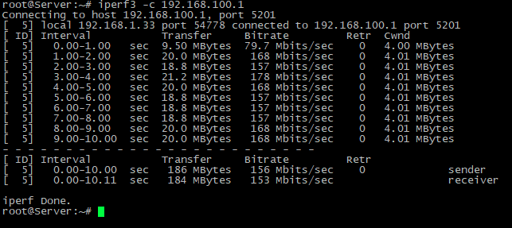
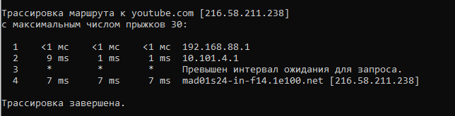
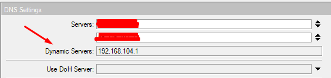
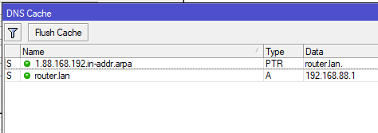
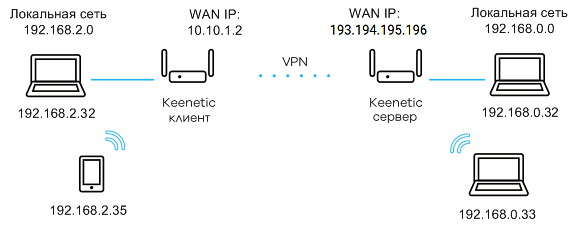
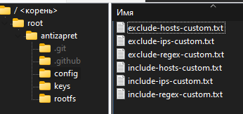
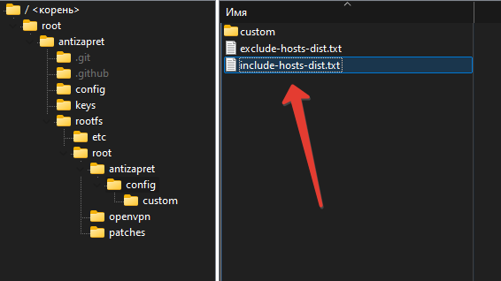

Здравствуйте.
Установил на VPS по этой инструкции AntiZapret-VPN-Container/README.md at main · GubernievS/AntiZapret-VPN-Container · GitHub - всё хорошо. Вопрос - можно ли обновить OpenVPN, т.к. версия уж очень старая?
Так как базовый образ старый (Debian 10), то там будет не самая последняя версия в apt. Можно начать с apt update -y && apt upgrade -y внутри контейнера.
Если нужна прям последняя версия то надо собирать руками. У себя в docker я так делаю: antizapret-vpn-docker/Dockerfile at master · xtrime-ru/antizapret-vpn-docker · GitHub
очень даже спасибо. ваша версия докера более свежая. удобно
Я сегодня переделал сборку, перешел на ubuntu 24.04 и последние версии OpenVPN и дополнительно поставил openvpn-dco.
По идее должно стать быстрее, но я не тестил какая нагрузка была на роутере до обновления сервера.
Добрый день! А инструкцией или скриптом не поделитесь? а то уж больно не расторопный дефолтный контейнер, а DCO как никак должно дать прирост из-за драйвера ядра
Я, правда, не смог определить включилось ли DCO и есть ли улучшения 
ip -details link show
Должно быть написано dco у виртуального интерфейса. Улучшения есть на десятки %.
как в твоем контейнер добавлять новые домены? в список внес, перезагрузил контейнер и ничего не меняется
Как и всегда - подождать пару минут, пока правила не обновятся. При старте kresd запускается сразу, но со существующими списками.
да уже минут 20 жду ) поэтому вопрос возник
Да, видел в доках команду. Там ничего нет:
Я проверю, но если автоматически не запускатеся, то можно руками дернуть:
docker exec antizapret-vpn bash -c "cd /root/antizapret && ./doall.sh"
Он включится автоматически, если используется
proto udp
topology subnet
cipher AES-256-GCM
tls-crypt
отбой, я серваки перепутал ) все работает, спасибо
насколько я знаю AES-128-GCM тоже подходит. А вот про tls-crypt не слышал ничего. Сейчас попробую, спасибо!
Да, должно работать, сейчас в коде:
const char *
dco_get_supported_ciphers(void)
{
return "AES-128-GCM:AES-256-GCM:AES-192-GCM:CHACHA20-POLY1305";
}
А есть пример как настроить? Я смотрю там надо ключи генерить для сервера и клиента. И есть еще новая версия tls-crypt-v2 с разными ключами для каждого клиента… 
openvpn --genkey secret ta.key
На сервере
tls-crypt ta.key 0
На клиенте
key-direction 1
tls-crypt ta.key 1
Или что-то в этом роде, у меня скрипт на go конфиг гененрирует с inline ключём.
tls-crypt-v2 не вижу поддержки в DCO
Ага, спасибо! Сhatpgt подсказал, как содержимое ключа прописать в ovpn файле. Тестирую.
Привет. за докер спасибо отдельное, lxc крут, но не всегда подходит для конкретного окружения \ сервера.
Есть ньюанс - как можно добавить в впн весь траф?
на оригинале антизапрета пришлось подправить knot чтоб разрешить доступ к днс для всего трафика
ну и на клиенте redirect-gateway def1 bypass-dhcp
тут наверно не сохранятся же изменения в контейнере?
Да, с новой сборкой офигенно полетело всё.
2 вопроса, которые меня мучают - чем чреват запуск doall.sh скажем раз в сутки? А то он каждые 6 часов запускается и могут быть фризы.
А второй вопрос - где посмотреть список всех клиентов, которые к контейнеру подключены?
Добавил --verb 3 в аргументы запуска openvpn и при старте появилось
Aug 09 12:18:26 22d5d25249d2 openvpn[1084]: Note: Kernel support for ovpn-dco missing, disabling data channel offload.
При том что я устанавливаю openvpn-dco-dkms! Буду разбираться. Но наконец то ясность появилась!
У меня стоит 12 часов и проблем не испытывал. Разве что может быть если условный example.com появится в https://raw.githubusercontent.com/zapret-info/z-i/master/dump.csv то ты его в худшем случае получишь через 18 часов. Тут скорее вопрос как часто тебе надо иметь как можно более свежие списки блокировок. наверное🤔.
По второму неуверен но в соседней теме Скрипт для автоматического развертывания AntiZapret VPN Container + YouTube по ссылке на гитхаб написано следующее
Посмотреть статистику подключений OpenVpn (выход Ctrl+X)
sudo lxc exec antizapret-vpn -- nano /etc/openvpn/server/logs/status.log -v
При перезапуске контейнера все изменения сохраняются. При пересоздании - удалятся. Можно руками поправить нужные файлы или добавить в init.sh нужные скрипты, что бы они выполнялись при старте, а потом пересобрать контейнер docker compose built. Тогда локально будет образ со всеми исправлениями.
Но сейчас я активно вношу правки в репозиторий, так что в будущем будут проблемы с обновлением из за конфликтов. Лучше наверное подождать немного, пока весь код не перетащу из оригинального репозитория в мой.
Но если надо весь траф пустить через VPN, то я бы рекомендовал поднять обычный IPSec и/или L2TP. Поддержка этих протоколов есть везде, а скорость будет в разы выше.
Я у себя вот это использую: GitHub - hwdsl2/docker-ipsec-vpn-server: Docker image to run an IPsec VPN server, with IPsec/L2TP, Cisco IPsec and IKEv2
Да не сказать чтобы часто, пусть появляется через 18 часов, это лучше чем кратковременные фризы.
А за команды спасибо, то что искал и никак не нашел.
А вот такой вопрос - планируется ли использование sndbuf и rcvbuf в клиенте и сервере? Я поставил коненчо себе по 4 мегабайта буферы, на старой сборке сильно помогло, а вот на новой по инерции перенес.
И не могу понять оправданы они или нет 
мне не к спеху, у меня и обычная lxc версия отлично работает)
IPsec я ненавижу, l2tp давно лочится местами)
просто все сервисы уже перевел на докер, этот по сути последний остался))
для скорости и мобил xray есть))
все ясно, ждемс, пасибо)
Разобрался с dkms!
Official Docker VPN Server with Access Server | OpenVPN - написано, что для того что бы работал нужно ставить на хостовую машину!
DCO: You can enable DCO with Access Server if you install and load it on the host Linux system.
Проверяю, будет ли работать openvpn внутри контейнера с хостовым расширением ядра.
Поднял для теста виртуалку с ubutnu24.04 (в более ранних версиях нет готового пакета dco)
Установил на хосте apt install openvpn-dco-dkms и все заработало в контейнере.
Нагрузка на cpu на сервере упала почти до 0!
Обновляю контейнер и делаю инструкцию.
забираем? 
Готово!
Вот инструкция: GitHub - xtrime-ru/antizapret-vpn-docker: Docker container with antizapret-vpn for selfhosting.
В старых конфигах сервера был в списке алгоритмов AES-128-CBC, из за него не включится dco. Либо обновить контейнер, либо удалить в конфигах руками.
Там для свежих систем (24 убунта и новее) и ручная установка deb пакета для 20-22 убунт.
Проверил на 24 и 22 убунтах - все прекрасно:
- В логах пишется, что dco включен
- В ip -details link show появилась пометка ovpn-dco
tls-crypt кстати не требуется для DCO. Не стал его влючать, иначе все клиентские ключи надо будет перегенеривать. Да и нагрузка увеличится из за шифрования.
Понятно, это доп. защита от сканирования (аналог PresharedKey в wireguard).
Класс, пересобрал прям с нуля всё у себя и раскатал на все роутеры которые к моему контейнеру подключены. Всё работает, всё грузится, но
sndbuf 3670016
rcvbuf 3670016
всё равно себе вернул 
Это только для серверного конфига? Замеры проводил?
UP: Для DCO в доках openvpn рекомендуют mtu 1420 выставить, но у меня чет через tun-mtu 1420 не срабатывает, в логах всеравно другие значения пишутся…
и на сервере добавил (в контейнере) и на клиенте (в конфиге роутера openvpn)
Замеры да, без этих параметров - открываю ютуб с веба, жду секунды 4-5 - начинает играть в 1080 при доступном 4к, скорость 20-30 мегабит и разгоняется
С параметрами - открываю ютуб с веба, жду меньше секунды - играет сразу в 4к и скорость сразу под 100 мегабит если стате ютуба верить и разгоняется до 300 (канал дома - 500)
ChatGPT говорит что он нужен ещё для скрытия протокола. Так что думаю нужно добавить.
Супер. Сделаю в выходные тогда.
Новая версия готова:
- Добавлен tls-crypt
- Добавил рекомендуемые опции для mtu и sndbuf/rcvbuf
- Перенаправление всех логов в docker log. Теперь их видно при использовании docker compose up, или docker compose logs -f
- Оставил файлы конфигов чистыми, что бы их можно было редактировать без конфликтов гита
К сожалению, из за изменения структуры папок и добавления tls-crypt - ключи будут перегенерированы, так что не забудьте перенастроить клиентов после обновления.
Ооо, за конфиги и конфликты прям отдельное спасибо! Пошел тестировать.
Вы не сравнивали скорость между TCP и UDP? Я хотел сравнить, но конфиг UDP не работает. Я сравнил TCP OpenVPN и Wireguard, с wireguard скорость на ютубе в 4-5 раза выше и после добавления
sndbuf 3670016
rcvbuf 3670016
разницы в скорости не заметил.
А как можно точно проверить работу DCO?
У меня при выполнении команды: ip -details link show на хосте увы нет никаких пометок ovpn-dco на интерфейсах 
Делал всё по пунктам инструкции в гите

Сделал ещё пару тестов. Изначально я использовал OpenVPN на роутере Keenetic KN1810 на нём нагрузка на процессор около 50% при просмотре ютуба, попробовал напрямую запустить и скорость увеличилась в 3-4 раза, но при этом нагрузка на сервер тоже увеличилась в разы, но даже так Wireguard на роутере быстрее и нагрузка на сервер минимальна. Вывод: нужен antizapret работающий на Wireguard.
я думаю это индивидуальная история. я проверял на UDP например, и мне было сильно легче. Плюс тут наверное реляет пинг до сервера и локация.
С DCO нагрузка на CPU сервера у меня около 0 при скорости в 200 мбит. Так что проще сервер настроить и роутер обновить. На последних asuswrt merelin, например, уже версии openvpn 2.6+. Надо только проверить, есть ли там расширение dco.
UP:
Но добавить wireguard звучит, как задача на пару дней. Только не помню, позволяет ли он маршруты на клиенте прописывать.
А как можно точно проверить работу DCO?
Пометка ovpn-dco появится на интерфейсах, которые создаст openvpn в контейнере: vpn и vpn-tcp.
Кроме того в новом контейнере уровень логирования выше, в логах будут записи:
docker compose up -d && docker compose logs -f | grep -i dco
В результате должно быть такое:
antizapret-vpn | Aug 10 08:48:23 0e72539c9161 kernel: acpi PNP0A03:00: _OSC: not requesting OS control; OS requires [ExtendedConfig ASPM ClockPM MSI]
antizapret-vpn | Aug 10 08:48:23 0e72539c9161 kernel: ovpn_dco_v2: loading out-of-tree module taints kernel.
antizapret-vpn | Aug 10 08:48:23 0e72539c9161 kernel: ovpn_dco_v2: module verification failed: signature and/or required key missing - tainting kernel
antizapret-vpn | Aug 10 08:48:23 0e72539c9161 kernel: OpenVPN data channel offload (ovpn-dco) 0.0+git20231103 -- (C) 2020-2023 OpenVPN, Inc.
antizapret-vpn | Aug 10 08:48:23 0e72539c9161 systemd[1]: ldconfig.service - Rebuild Dynamic Linker Cache was skipped because no trigger condition checks were met.
antizapret-vpn | Aug 10 08:48:23 0e72539c9161 openvpn[121]: OpenVPN 2.6.9 x86_64-pc-linux-gnu [SSL (OpenSSL)] [LZO] [LZ4] [EPOLL] [PKCS11] [MH/PKTINFO] [AEAD] [DCO]
antizapret-vpn | Aug 10 08:48:23 0e72539c9161 openvpn[121]: DCO version: 0.0+git20231103
antizapret-vpn | Aug 10 08:48:23 0e72539c9161 openvpn[121]: net_iface_new: add vpn type ovpn-dco
antizapret-vpn | Aug 10 08:48:23 0e72539c9161 openvpn[121]: DCO device vpn opened
Спасибо! DCO работает, не понятно тогда почему у меня больше 25мб по скорости не идёт на youtube, не уж то кинетик не вывозит
Да. На клиенте то DCO нет. У меня четырехядерный Asus AX55 выдает до 50-70 мбит через antizapret. А клиент на десктопе уже 300 мбит.
Я уже добавляю поддержку ipsec/l2tp, более знакомая для меня технология чем WG. Надеюсь не очень долго займет.
В дескриптор службы openvpn@%i.service надо добавить капабилити CAP_SETPCAP.
Дописал, никак не повлияло
У меня DCO включён, но нагрузка на сервер с 1 ядром достигает 100% при скорости около 70-90 мбит.
На скриншоте у вас какие-то интерфейсы докеров, я ими никогда не пользовался (и до сих пор не понял, зачем эта лишняя сущность), мои рекомендации относятся к голой ос, например, на дебиане 12 DCO всегда запускался.
Не уверен. Что выдает docker compose logs | grep -i dco ?
antizapret | Aug 10 05:02:50 6da1b1315d13 openvpn[133]: OpenVPN 2.6.9 x86_64-pc-linux-gnu [SSL (OpenSSL)] [LZO] [LZ4] [EPOLL] [PKCS11] [MH/PKTINFO] [AEAD] [DCO]
antizapret | Aug 10 05:02:50 6da1b1315d13 openvpn[135]: OpenVPN 2.6.9 x86_64-pc-linux-gnu [SSL (OpenSSL)] [LZO] [LZ4] [EPOLL] [PKCS11] [MH/PKTINFO] [AEAD] [DCO]
antizapret | Aug 10 05:02:50 6da1b1315d13 openvpn[135]: DCO version: 0.0+git20231103
antizapret | Aug 10 05:02:50 6da1b1315d13 openvpn[133]: DCO version: 0.0+git20231103
antizapret | Aug 10 05:02:50 6da1b1315d13 openvpn[135]: net_iface_new: add vpn type ovpn-dco
antizapret | Aug 10 05:02:50 6da1b1315d13 openvpn[133]: net_iface_new: add vpn-tcp type ovpn-dco
antizapret | Aug 10 05:02:50 6da1b1315d13 openvpn[133]: DCO device vpn-tcp opened
antizapret | Aug 10 05:02:50 6da1b1315d13 openvpn[135]: DCO device vpn opened
antizapret | Aug 10 06:03:50 6da1b1315d13 openvpn[133]: antizapret-client/...:39908 SIGTERM[soft,ovpn-dco: transport error] received, client-instance exiting
antizapret | Aug 10 06:07:26 6da1b1315d13 openvpn[133]: dco_parse_peer_multi: cannot store DCO stats for peer 2
Да, все верно. А что top внутри контейнера показывает во время интенсивного использования?
WG не умеет пушить маршруты клиенту.
Лучше смотрите в сторону IPSec, либо теребите поддержку Keenetic, чтобы добавили DCO.
кто-нибудь знает как это подключить на прошивке merlin?
что я только там не пробовал, не конектит, пришлось официальную прошивку опять ставить
Слишком мало информации. Что в системном журнале, если в конфиг на клиенте добавить verb 5?
Внутри контейнера нагрузки показывает нет, но вне контейнера есть.
Да, IPSec умеет через пушить конфиги подсеити через leftsubnet, Но у меня на компе чет не получилось настроить коннект, а на роутере asus вообще нет ipsec клиента.
А, так это из за TCP!
На UDP меньше 5% суммарная нагрузка на CPU при 200+ мбит/сек
В вашем контейнере не работает UDP.
На скрине мой контейнер и коннект по UDP. Использую и с ПК и с роутера.
Что в docker compose logs -f при попытке подключения по UDP?
UP: проверил - на TCP у меня нагрузка так же высокая. Т.е проблема именно в протоколе.
В контейнере не запускается openvpn udp
Надо смотреть логи в journalctl. Команда есть на скрине.
Если сервер стартовал давно, то логи могли очистится. Надо сделать restart и еще раз проверить логи
docker exec antizapret-vpn systemctl restart openvpn-server@antizapret
docker exec antizapret-vpn journalctl -u openvpn-server@antizapret
Нету конфига для UDP, странно, что у вас запускается нормально.
Я ошибся в названии сервиса. Там просто openvpn-server@antizapret, a не openvpn-server@antizapret-udp. Предыдущее сообщение обновил.
Команда для статуса тоже не верная.
Вот так должн обыть:
systemctl status openvpn-server@antizapret
Почему openvpn-server@antizapret, а не openvpn-server@antizapret-udp? У меня openvpn-server@antizapret-tcp работает, а с openvpn-server@antizapret-udp нет.
Так изначально было в оригинальном контейнере антизапрета. Я не трогал 
Есть два сервиса: openvpn-server@antizapret и openvpn-server@antizapret-tcp. Первый отвечает за udp. Конфиги в /etc/openvpn/server/ так же называются.
Никакого openvpn-server@antizapret-udp не существует.
По логам вижу что все работает корректно. Что там при подключении происходит?
Существует ибо systemctl status openvpn-server@antizapret-udp отображает.
Что угодно можно писать после @ и оно будет отображать. Это что то вроде аргумента, который прокидывается в базовый конфиг openvpn.
То что написано после @ подставляется в команду и openvpn ищет конфиг с этим именем в своей папке. Файлы конфига есть только antizapret.conf и antizapret-tcp.conf.
Эти же сервисы активируются в контейнере: antizapret-vpn-docker/Dockerfile at ea7702e664ee80ac8eba64f771dbb2a605fc8a1f · xtrime-ru/antizapret-vpn-docker · GitHub
Нашёл в чём причина, оказалось проблема не в контейнере, у меня не подключалось к UDP через клиент на Windows, а на смартфоне подключился и на роутере.
Рад слышать! Возможно какие то настройки конфликтуют с клиентом на винде. Его бы лог глянуть.
Например я убирал устаревшие проколы шифрования, что бы DCO работал.
И как это сделать? Это связанно со строкой Note?
2024-08-10 23:00:43 Note: --cipher is not set. OpenVPN versions before 2.5 defaulted to BF-CBC as fallback when cipher negotiation failed in this case. If you need this fallback please add ‘–data-ciphers-fallback BF-CBC’ to your configuration and/or add BF-CBC to --data-ciphers.
2024-08-10 23:00:43 OpenVPN 2.6.12 [git:v2.6.12/038a94bae57a446c] Windows [SSL (OpenSSL)] [LZO] [LZ4] [PKCS11] [AEAD] [DCO] built on Jul 18 2024
2024-08-10 23:00:43 Windows version 10.0 (Windows 10 or greater), amd64 executable
2024-08-10 23:00:43 library versions: OpenSSL 3.3.1 4 Jun 2024, LZO 2.10
2024-08-10 23:00:43 DCO version: N/A
2024-08-10 23:00:43 TCP/UDP: Preserving recently used remote address: [AF_INET]IP:1194
2024-08-10 23:00:43 All ovpn-dco adapters on this system are currently in use or disabled.
2024-08-10 23:00:43 Exiting due to fatal error
Нет, Note это нормально. Я ключ не указывал, что бы клиент и сервер сами договорились.
Проблема в “All ovpn-dco adapters on this system are currently in use or disabled.”
Есть issue: OpenVPN error on network device Windows 10 22H2 x64 · Issue #38 · OpenVPN/ovpn-dco-win · GitHub , но пока не решено
Протестировал UDP на роутере, ютуб стал открываться с минимальными задержками и ещё скорость загрузки видео увеличилась на 30%-40%. Спасибо, что постарался помочь и за сам контейнер.
На компе довольно просто починить клиент. Выключи в настройках клиента DCO. На сервере он останется, а на компе проц мощный, он и без DCO сотню мбит вытянет
Можно ли добавлять домены по маске? Например, на ТСПУ блокируются все домены в зоне .ua
В контейнере есть .awk файлы в папке /root/antizapret/
В них как раз регулярные выражения.
Можно наверное в репозиторий такое правило добавить. Хотя странно, что раньше не добавили. Они точно не работают через антизапрет?
А, нет. Там только exclude. Значит надо по аналогии прописать в kres.d: antizapret-vpn-docker/rootfs/etc/knot-resolver/kresd.conf at master · xtrime-ru/antizapret-vpn-docker · GitHub
указать там 127.0.0.4 и ua.
Не проксируются. Например, overclockers.ua
Addresses: 2606:4700:20::ac43:480d
2606:4700:20::681a:426
2606:4700:20::681a:526
172.67.72.13
104.26.4.38
104.26.5.38
Да, действительно не проксируются. Сейчас поправим!
Сейчас проверил, достаточно в inlude-hosts.custom.txt добавить домены без точек. Все будет работать.
Но я сделал фикс, что бы из коробки работало. Сейчас соберется и через 5 минут можно будет обновиться:
git pull && docker compose pull && docker compose up -d
можно добавлять домены первого уровня в исключения, те просто добавляй ua в include-hosts-custom.txt
Коллега xtrime, смотрю вы тоже развлекаетесь, нам бы конечно объединить бы силы и опыт, правда я пошел в сторону разворачивания антизапрета на хосте - чтобы добиться максимальной производительности
Пока вот поделюсь наблюдениями по поводу настройки openvpn
настройка keepalive 2 10 - как я понимаю посылает каждые 2 секунды пинги, очень часто, я вообще пока убрал из конфига (по дефолту пинг 10 сек и где то через 40 сек реконектится), для tcp возможно ее даже стоит увеличить
увеличил txqueuelen до 1000 тк были потери пакетов
tun-mtu не трогал, и не стал бы менять значение, если нет проблем
увеличение sndbuf и rcvbuf помогает на некоторых роутерах увеличить скорость по UDP, но на сервере никакого положительного эффекта не наблюдал
для udp я добавил:
fast-io
для tcp я добавил:
tcp-nodelay
Изучал форумы, пишут что tls-crypt и возможно tls-crypt2 определяет ТСПУ в момент подключения к серверу и умеет блокировать
Да, вам бы унифицировать конфиги, а все различия чтобы сводились к способу установки (контейнер vs bare metal). Было бы очень круто. Я, например, не люблю контейнеризацию, предпочитая ставить всё через пакетный менеджер.
Раз уж заговорили про tls-crypt и защиту от обнаружения, есть ещё вот такие патчи.
К сожалению, Mikrotik до сих пор не умеет в tls-crypt, а как сегодня выяснилось в процессе экспериментов с контейнером, и в UDP OpenVPN тоже. Ну если UDP они ломают-чинят от прошивки к прошивке, то tls-crypt не планируют, похоже, никогда.
А зачем google.com включили в include-hosts-custom? Нет же (пока?) смысла весь трафик к google заворачивать в VPN.
Поддержу мнение свыше, хотел ещё несколько дней назад на Гите написать, смысл “заводского” добавления в списки всех подряд доменов?
Достаточно нескольких официально заблокированных и тех что сейчас связаны с YouTube, тоже касается внесения несвязанных с Google остальных доменов.
Наверное стоит внести их в dict (он же для этого предназначен на сколько помню) и закомментировать # не заблокированное/ограниченное, оставить на усмотрение пользователя.
И на сколько наблюдаю у себя и друзей, трафик с Европейской части России идёт на сервера Google в Финляндии на основании GeoDNS, и при расположении контейнера на сервере где-то в центральной Европе, для не используемых доменов Google (после исключения из “заводского” списка), на основании geo сервера, возвращает маршруты к Немецким и иным серверам, что увеличивает задержку. Geo так же актуально для Steam. Нужные для себя домены Гугла и Стим, не задействованные в обходе через VPN, указал в kresd.
Оптимальным вариантом, расположение арендуемого сервера где-то на Скандинавском полуострове что решает проблему сразу, вероятно это стоит упомянуть в readme.
Смысл в удобстве. Что бы рандомный выполнил 4 команды на VPS, скачал сертификат и забыл про все это 
Список скопипастил из скрипта в соседней теме и не знаю зачем там гугл включили. Удалил его пару дней назад.
Не очень понял про какой dict идет речь. Но в папке config специально вынесены txt файлы, которые можно наполнить самостоятельно доменами которые надо добавить или исключить.
У вас старая версия сейчас influde-hosts-custum пустой по умолчанию.
Да, видел, спасибо за труд! Часть фиксов копипастил из твоего скрипта  Буду только рад.
Буду только рад.
Docker не дает никакого оверхеда. Это не виртуализация. Максимальную производительность дает расширение DCO в kernel-space 
У меня роутер раньше долго держал коннект с мертвым сервером из за чего интернет не работал совсем. Сделал настройку максимально агрессивной, что бы реконнект быстрее происходил. Что значит “очень часто”? Пинг не добавляет никакой нагрузки, не вижу минусов.
Согласен, но в доках есть рекомендация установить его равным 1420 при использовании DCO.
Выше наоборот писали, что позволяет обфусцировать траффик. Да и некоторые роутеры не умеют в него., как оказалось. Хорошо бы сделать такие вещи конфигурируемыми через ENV, но мне лень  Отключу.
Отключу.
txqueuelen, fast-io, tcp-nodelay поправлю сейчас. Спасибо!
Добрый день, спасибо за контейнер!
подскажите, пожалуйста:
- возможно ли (и как правильно) вносить изменения в DNS? В частности я активный пользователь controld, с помощью которого можно открывать такие сервисы как netflix и прочее
- контейнер будет работать только с openvpn или нет? Мне казалось, что это уже устаревшая технология
- как правильно делиться конфигом?
Странно, буквально вчера вечером (около 22 по Москве) тянул с git на свежую VPS. Прилип как-то старый…
Удачи вам 
Только что посетил Git и проверил актуальный релиз, google.com остаётся в списке.
Предлагаю вернуть include-host-dict.txt что используется в установленном оригинальном lxd контейнере и аналогично ему внести “заводские” домены туда, что исправит конфликт при обновлении.
Я именно это и сделал вот тут: https://github.com/xtrime-ru/antizapret-vpn-docker/blob/master/rootfs/root/fix.sh#L11
Но я забыл очистить antizapret-vpn-docker/config/include-hosts-custom.txt at master · xtrime-ru/antizapret-vpn-docker · GitHub 
Сейчас исправлю. В гите будет всегда лежать пустой файл. Спасибо!
Добавляйте домены и/или ip адреса в соответствующие файлы в папке config.
Пока только openvpn.
Проблема в настройке tunnel split на клиенте и поддержке со стороны железок. Нужно указать клиенту, что только фейковые адреса 10.224.0.0/15 должны открываться через VPN. Такая фича есть еще в ipsec, но у меня на роутере, например, есть только поддержка PPTP, L2TP и OpenVPN клиентов. Поэтому нет мотивации тратить время на такую фичу.
В версии openvpn 2.6 добавили поддержку DCO. Теперь по скорости openvpn не так сильно уступает интегрированным в ядро linux решениям типа wireguard.
Скачать файл keys/client/antizapret-client-udp.ovpn или keys/client/antizapret-client-tcp.ovpn
Файлы можно использовать на любом количестве клиентов. Рекомендуется upd, так как гораздо выше скорость и ниже нагрузка на CPU сервера и клиента.
Вопрос. А awk скрипты только в контейнере? Нет плана вынести их в хост, чтобы можно было править на предмет добавления зон (чтобы проксировать только домены 3 и дальше уровня, по типу play.google.com)?
Мне кажется, что в txt файлы можно добавлять домены любого уровня и они будут работать как регулярки.
Ну я опирался вот на это:
Добавил поддержку внешних DNS серверов типа adguard с помощью env переменной: Feat: add adguard support · xtrime-ru/antizapret-vpn-docker@b099467 · GitHub
Готовый compose файл сразу с контейнером adguard, который будет использовать antizapret:
Ох… Проверил исходники Bitbucket
Действительно /root/antizapret/scripts/getzones.awk проходится по списку сгенерированному из txt файлов и берет оттуда только домены.
Наверное для оптимизации сделано. Надо подумать как лучше сделать. Мб отдельный файл который будет прямо в конфиг kresd инжектится без всяких посредников 
Здравствуйте, @xtrime! Установил ваш скрипт все просто летает. Я так смотрю вы еще вручную добавили доступ к ChatGPT и YouTube? И подскажите, пожалуйста как завести AdGuard Home. Это нужно в /etc/knot-resolver/kresd.conf в конце прописать policy.add(policy.all(policy.FORWARD({‘ip_antizapret’})))?
Так может проще будет, если монтировать getzones.awk в docker, и положить его в config на хосте? Чтобы не ломать голову…
И снова здравствуйте! 
Спасибо за проделанную работу, возможно автору стоит уже задуматься о сборе на чай 
Я с вопросом
Сталкивался ли кто, что при развёрнутом контейнере, с открытыми портами (как allow в ufw, так и полностью выключенном ufw) происходит ситуация, что keenetic может спокойно подключаться по TCP, но в упор не может подключиться по UDP ?
В логах кинетика сыпет такое вот:
Авг 12 10:04:35
OpenVPN0
Note: --cipher is not set. OpenVPN versions before 2.5 defaulted to BF-CBC as fallback when cipher negotiation failed in this case. If you need this fallback please add '--data-ciphers-fallback BF-CBC' to your configuration and/or add BF-CBC to --data-ciphers.
Авг 12 10:04:35
OpenVPN0
OpenVPN 2.6.7 [SSL (OpenSSL)] [LZO] [LZ4] [EPOLL] [MH/PKTINFO] [AEAD] [DCO]
Авг 12 10:04:35
OpenVPN0
library versions: OpenSSL 3.1.5 30 Jan 2024, LZO 2.10
Авг 12 10:04:35
OpenVPN0
DCO version: N/A
Авг 12 10:04:35
OpenVPN0
UDPv4 link local: (not bound)
Авг 12 10:04:35
OpenVPN0
UDPv4 link remote: [AF_INET]IP_МОЕГО_VPS:1194
Авг 12 10:04:35
OpenVPN0
NOTE: UID/GID downgrade will be delayed because of --client, --pull, or --up-delay
Авг 12 10:04:45
OpenVPN0
[UNDEF] Inactivity timeout (--ping-restart), restarting
Авг 12 10:04:45
OpenVPN0
SIGTERM[soft,ping-restart] received, process exiting
Авг 12 10:04:45
ndm
Service: "OpenVPN0": unexpectedly stopped.
Как будто ругается на то что не может достучаться до адреса и дропает соединение
Хотя все нужные порты открыты, TCP на том же порте абсолютно нормально коннектится.
В какую сторону покурить?
После обновления контейнер перестал реагировать на некоторые домены в include-hosts-custom. Да и в fix.sh тоже. Например, 2ip не проксируется и 4pda по-прежнему думает, что к нему заходят из РФ и не пускает в разные запретные части по обходам блокировок, хотя до обновления работало с этими же конфигами
@xtrime огромное спасибо вам за контейнер, особенно за поддержку DCO, скорость больше 300 мегабит, нагрузка на процессор минимальная. Я в восторге !
но у меня небольшая проблема, я не могу подружить с клиентом на linux почему то нет соединения, на пк под виндой(10) все отлично.
Upd. Разобрался, я ставил слишком новый клиент на линукс, сейчас полет отличный )
какой у тебя vps? тоже бы хотелось такую скорость
zomro
вырожаю автору мемнтальную понтдержку) (хоть я и не люблю докер (наверное потому что не понимаю как оно там работает под капотом)), валдикасс обленился) не хочет обновлять свой контейнер( (я ему скока раз просил уже), отрадно видеть что вот уже сообщесво понтянулось, опенвпн чем хорош что ето комбаин можно из него слепить например виригуард установив data-ciphers чача-поли1305 какой нето потому что в смаратафонах нет(?) понтдержки исрукций для ускорения аеэса на проце(соке)
Спасибо за добрые слова!
Хм, странно. Возможно на новом клиенте DCO c ошибкой падает? Тут недавно на винде на это жаловались. Там с DCO клиент тоже не конектится. Надо в настройках выключать.
Это как?
PS. Я пытаюсь еще ipsec/xauth прикрутить, но пока без результатов…
При старте контейнера используются уже готовые правила. Но запускается генерация новых уже с пользовательскими настройками. Нужно подождать до 5 минут пока сгенерируются новые правила и потом уже проверять.
Так же мб кеш kresd мешает. Для надежности: запустить конетйнера, по логам удостоверится, что doall отработал и перезапустил kresd, перезапустить контейнер еще раз. Потом проверить dig 2ip.ru @127.0.0.1 в контейнере.
А что в логах openvpn на сервере в этот момент? Он видит коннект? docker compose logs -f
И стоит добавить опцию verb 3 в конфиг клиента, что бы логов побольше было.
все дело в том что я ставил openvpn3 на debian , он вообще даже не соединялся
потом глянул какая версия в контейнере, и поставил уже 2 версию.
Я поставил клиент на lxc в proxmox , dco завелся,на самом хосте ставил openvpn-dco-dkms, на роутере уже пробросил все маршруты в этот контейнер и получил хорошую скорость на всех устройствах в сети.
Немного не разобрался со списками, немного отличаются от оригинального антизапрета, но это уже пустяки
Еще раз , большое спасибо вам.

вот так получилось в однопотоке
спасибо за ответ, единственное по второму немного подискутирую.
мне кажется странным делать фокусировку на роутере, т.к. основная боль именно на моб. устройствах и свой роутер не всегда есть под рукой
дома сделать еще есть различные варианты так или иначе
можете, пожалуйста, чуть подробнее расписать как это использовать? (можно на примере adguard home)
это по сути сейчас в виде доп. образа в контейнере, чтобы фильтровать рекламу? adguard home по итогу доступен по какому-то порту?
А есть какие то примеры? У меня на iphone 120 мбит youtube через openvpn показывает:
Но повторюсь прикрутить дополнительный транспорт с поддержкой tunnel split сложно. Я пытался прикрутить ipsec, пока не получилось. Если получится, то откладывать релиз не буду 
Какие еще транспорты помимо ipsec и openvpn поддерживают tunnel split и есть на моб устройствах - я не знаю.
Дополнитлеьно использую этот контейнер для обычного VPN: GitHub - hwdsl2/docker-ipsec-vpn-server: Docker image to run an IPsec VPN server, with IPsec/L2TP, Cisco IPsec and IKEv2
Там весь трафик пускается через VPN, но нагрузка минимальная и поддерживается на всех моб устройствах.
docker compose down && git pull && docker compose -f docker-compose.adguard.yml pull && docker compose -f docker-compose.adguard.yml up -d
adguard будет доступен по адресу ip_вашего_сервера:3000
антизапрет будет использовать его в качестве DNS сервера.
Всем привет!
Кто-нибудь подружил контейнер с Mikrotik’ом в качестве клиента?
Уже специально ROS до 7-ки обновил, то ругается на “TLS error: handshake timed out(6)”, то “received packet with wrong ack rsid, dropping”. Какие ciphers и auth необходимо выбирать, чтобы заработало?(
- Только TCP
- Только TCP
- Только TCP
ниже рабочий конфиг. ROS 7.15.3. Ну и не шифровать TLS. На сервере закомментировать строчку tls-crypt keys/antizapret-tls-crypt.key 0
в файле ~/antizapret/keys/server/antizapret-tcp.conf
ЗЫ На название profile не обращайте внимания, я тоже пытался с UDP начать )) А так там default работает.
Изнутри сервера (по адресу шлюза OpenVPN), или из интернета тоже?
А у меня такой строчки и нет)
А как у тебя работает галочка “Verify Server Certificate”?
Ты какие файлики сертификатов забирал с сервака? Клиентские .crt и .key?
спасибо! мне кажется это в readme хорошо бы тоже указать
что касается скорости, то тут все действительно хорошо, подтверждаю…
Есть проблема в другом на данный момент, у меня в ютубе/inst при начальном заходе в приложение оч долго грузится главная, иногда может вообще не загрузится
никакие… я из ovpn файла копировал ca, crt и key
еще в конфиг сервера добавил
reneg-sec 0
иначе дергалось соединение каждый час
возможно, в свежей версии автор вроде бы уже убрал строчку
как-то работает ))
о, это полезно, спасибо!
Подключился, все ок, но сайты, которые нужно проксировать вообще не хотят открываться почему-то, в DNS-ах вот такие записи почему-то. Кто-нибудь указывал сторонние DNS-ы в Docker-compose файлике, может ему дефолтный ДНС не нравится, поэтому он чушь какую-то резолвит?(
Правильные адреса, покажите IP-Routes.
Все, разобрался, правило маскарада надо было поправить)
Но тем не менее, ютуб тот же открывается, но видео не грузятся от слова совсем, просто загрузка крутится и все(

Такая же проблема у меня на (iOS, Android), но на ПК сразу все грузится
два варианта
- Не все прописано в include-hosts-custom
- Вам по прежнему отдают с Российских серверов. Есть такие VPS хостинги, которые вроде не в России, а IP бьются как Российские у Google.
П.2 можно проверить по ссылке https://redirector.googlevideo.com/report_mapping?di=no
Подробнее тут: Google начал вносить IP Proxy серверов в список адресов РФ (геотаргетинг) - #51 by Dhohbr
П. 1 - проверяйте.
а… я-то сразу интерфейс в WAN список бросаю, а дальше у меня правила по спискам работают. Вот и забыл уточнить, т.к. это делали руки без участия головы.
Стоп. У Вас адрес youtube почему 216…? Должен быть 10.224… Судя по трейсроуту - мимо VPN идете.
Здравствуйте, подскажите, как изменить DNS сервера уже на развернутом docker?
По пути system/docker dns отсутвует конфиг DNS, а по штатному пути /etc/docker/daemon.json сервера за комментированы
Что значит “изменить DNS сервера уже на развернутом docker”?
Если надо что бы внутри антизапрета использовался другой DNS, то есть ENV переменная DNS. Пример: antizapret-vpn-docker/docker-compose.adguard.yml at master · xtrime-ru/antizapret-vpn-docker · GitHub.
Но после правки docker-compose файла контейнер придется пересоздать. Однако в контейнере инфа не хранится, пересоздание не приводит к смене ключей или настроек (если конечно руками там ничего не правили).
Если речь в целом про докер, то внутри контейнера можно добаивть echo “nameserver x.x.x.x” >> /etc/resolve.conf , но эта штука кажется при перезапуске затирается.
Кажется говорили, что там испльзуется DOH. К сожалению сейчас в логах нет инфы из процесса proxy.py, который отвечает за обработку DNS. Я попробую пофиксить логи, тогда можно будет поразбираться что там за запрос прилетает.
Или, возможно, где то в соседних темах уже поправили и надо очередной патч накатить…
Не работает, хоть 5 минут ждать, хоть 5 часов. Уже в какие только списки не добавлял. Все заблокированное обходит замечательно, но вот не заблокированное принудительно через VPN не идет
А зачем их изменять? Насколько я понимаю, knot не пользуется адресами серверов в контейнере, а ходит сразу выше, так как он полноценный рекурсивный ресолвер. Если нужно какой-то конкретный использовать для VPN - то policy в kresd.conf
А она в kresd отдает DNS, да?
Накатываю каждый раз новую версию и всё супер.
А можно таки как-то отказаться от зависимости от include-hosts-custom.txt и не пересоздавать ключи?
Ну или ключ какой-то есть при ребилде, я в docker-compose не силён,
В общем, на последней сборке есть траблы с DNS
Снес виртуалку подчистую, накатил все заново, заново настроил на микроте, подключается, все ок, в кеше DNS ничего не появляется, при попытке nslookup’а - connection timeout(


Странно.
А без VPN все работает?
А маршруты на DNS в VPN заворачивате?
У меня вот так и работает.
UPD: правда, сборка не последняя
Без VPN все прекрасно
Маршруты да, заворачиваются в туннель, все ок, забыл их скрин прикрепить.
Я думаю, что нюанс именно с последнем сборкой, и возможно, только у меня 
- В kresd + отключает фиксы для ру доменов в нем.
- В proxy.py
- В сам контейнер (для загрузки списков блокировки через системный wget/curl)
- include-hosts-custom.txt сейчас пустой, его можно не трогать.
- Обычно обновление, перезагрузка и пересоздание контейнера не затрагивает ключи.
Пересоздание могло произойти при обновлении с версии 2 на версию 3. Из-за того что структура проекта сильно поменялась + был неудачный эксперимент в включением и выключением tls-crypt, который тоже потребовал обновления клиентских ключей.
Сейчас еще один рефакторинг планируем релизить, возможно там тоже ключи пересоздадутся. Конфиги так же уберем из git репозитория и будем создавать в runtime, что бы их можно было править без конфликтов с репозиторием.
Но конечно, нет цели мучать пользователей проблемами при обновлении. Если есть возможность сохранить старые ключи/файлы то так и делаем.
Всё проверил, оказался косяк на стороне хостера  подсеть выпала кривая для сервера, всё по UDP не долетало, не только OVPN
подсеть выпала кривая для сервера, всё по UDP не долетало, не только OVPN
Сейчас всё отлично, спасибо!
а не приведет ли это к проблемам с НСДИ? всякие госуслуги и банки не отвалятся?
Могут. Тут либо AdGuard, либо безпроблемная работа.
Хотя… в Adguard же можно для ru прописать свои upstream сервера.
Один вопрос повис - морда Adguard (на 3000м и 80м порту) будет откуда доступна? Только по адресу antizapret изнутри, или из интернета тоже?
Да, это видимо я пропустил версии. Но тем не менее спасибо, что развиваете проект, сижу на нем с самой первой версии 
@xtrime Подскажите пожалуйста, как удалить все хосты ютуб, чтобы трафик не ходил через OpenVPN
удалял все хосты из rootfs/root/fix.sh
перезагружал командами:
git pull
docker compose pull
docker compose up -d
добавлял в исключение все хосты в папку:config/exclude-hosts-custom.txt
перезагружал сервер, и все равно трафик идет через это подключение
У меня ситуация зеркальная. Наоборот делал все что возможно, чтобы трафик принудительно шел через VPN для нужных мне сайтов, удалял и вписывал где только возможно и не помогало. Вчера поставил на хосте убунту 24.04 вместо 20.04, сделал все то же самое и, о чудо, заработало. Может совпадение, но теперь лучше лишний раз туда не лезть)
exclude-hosts-custom.txt достаточно. После перезапуска нужно подождать несколько минут, пока правила обновятся.
Вот это неприятно и странно. У меня на хосте 22 убунта. Там точно все в порядке.
Бесит когда поведение контейнера отличается в зависимости от хостовой системы. Но лучше в такие момент проверить лог контейнера и скинуть сюда, что бы можно было поправить.
UP: кажетс на 20 убунте есть проблемы с iptables внутри контейнера. Ferm перетирает правила докера и DNS докера не работает. Попробуем добавить фикс в будущих релизах.
@xtrime как продвигаются успехи по внедрению IPSec? На сайте keenetic говориться о поддержке IPSec на аппаратном уровне, то есть скорость должна быть выше чем через OpenVPN.
DNS через него работает, split tunneling тоже, а вот трафик пока не смог редиректнуть из контейнера в контейнер. Посижу еще в выходные.
@xtrime я заметил, что у меня какого то фига конфиг kresd.conf который я редактировал под себя (изменил /rootfs/etc/knot-resolver/kresd.conf) через какое то время изменяется на ваш который в github, при этом я не обновлял контейнер. Как это исправить?
А вы не хотите все конфиги и ключи вынести на хост и прокинуть директорию с ними внутрь контейнера как вольюм? Это бы решило все проблемы с потерей настроек при замене контейнера.
Именно так и сделано: antizapret-vpn-docker/docker-compose.base.yml at master · xtrime-ru/antizapret-vpn-docker · GitHub
Папка rootfs не используется в контейнере. Это копия репозитория, которая используется при копировании файлов в /etc и /root. Я забыл удалить ее. Правки в этой папке делать не надо. Правильный путь /etc/knot-resolver/kresd.conf
Не понял, я именно там правки делал и при первом запуске контейнера используется мой конфиг в rootfs, а потом примерно через 2-3 часа конфиг меняется на тот, что на github.
В контейнер было бы полезно добавить фикс, без него если DNS сервер выдаст ip адрес из этой подсети не будет грузиться сайт. Эта подсеть относиться к CDN akamai. Без этого фикса лично у меня не грузились аватарки и превью к играм в steam и не устанавливался лаунчер curseforge.
sed -i ‘9i echo “104.109.143.0/24” >> temp/list.csv’ /root/antizapret/doall.sh
Был ещё такой фикс, но у меня часть доменов работало, часть нет, поэтому первый фикс лучше.
Так же можно отключить DNSSEC особенно работая в связки с AdguardHome.
Если есть желание, можно интегрировать GitHub - dartraiden/no-russia-hosts: Список доменов, владельцы которых ограничивают доступ с российских IP-адресов
Как следует из названия, это домены, владельцы которых не пускают россиян, поэтому сам бог велел их проксировать. Некоторые домены там пересекаются со списком заблокированных (например, Grammarly, который одновременно и россиян не пускает, и заблокирован Роскомнадзором).
Определённо нужно. Я такой список искал в своё время, но не нашёл.
К слову, я помогаю этот Docker-контейнер развивать. Там куча изменений висит в PR; xtrime смержит как будет время. В планах ещё с systemd переехать на supervisor, чтобы избавиться от привилегировнного режима контейнера (systemd без него не запускается; но в то же время это нежелательная опция Docker-контейнера). С твиками ядра тоже проблема: они только в привилегированном режиме применяются. Есть ли от них польза — непонятно; нужно проверять.
это хорошо конечно все, но иногда такие списки не всем нужны, хотелось бы иметь выбор или как то просто их отключать. И хотелось бы какой то прозрачности что уже добавлено “из коробки”
Вся прозрачность находится в GitHub-репозитории, а конкретно в этом файле на данный момент. В будущем дополнительные домены в другом файле будут находиться.
Можно исключить ненужные домены через exclude-hosts-custom.txt или сделать опцию у контейнера для включения списка по желанию. Ну идея-то такая, чтобы из коробки доступ был ко всему как раньше. Подумаем, как лучше это сделать.
Ну я к тому , что мне приходится лезть в контейнер и половину из этого списка удалять самому, с добавлением нового списка нужно будет проделывать тоже самое. Фишка антизапрета как раз была в том, что у тебя по умолчанию работают только домены из списков роскомнадзора, а то что тебе еще самому нужно ты добавляешь сам. Мне в принципе не сложно все это самому править , просто хотелось бы универсальности какой то при сборке контейнера
Я считаю, что нужно интегрировать данный список по умолчанию, это почти одно и тоже, что и с блокировка сайта со стороны роскомнадзора, только в этом случае со стороны владельца сайта, но нужно интегрировать с автоматическим обновлением этого списка, а не постоянно ручками обновлять контейнер.
ну вы считаете так , я считаю по-другому, в итоге должен быть какой то выбор все же
Друг, приветствую!
Помогите, кто-нибудь
Имеется - хост на бубунте 22.04, так же установил DCO согласно гайду
вроде всё запустил, контейнер работает, но коннекта нет что по удп что по тсп. овпн успешно рапортует что соединение установлено, айпишник выдаёт, но весь интернет падает. Что делать, куда копать? Лог ОВПН - в спойлере
Спойлер
Sun Aug 18 00:48:05 2024 Note: --cipher is not set. OpenVPN versions before 2.5 defaulted to BF-CBC as fallback when cipher negotiation failed in this case. If you need this fallback please add ‘–data-ciphers-fallback BF-CBC’ to your configuration and/or add BF-CBC to --data-ciphers.
Sun Aug 18 00:48:05 2024 OpenVPN 2.6.12 [git:v2.6.12/038a94bae57a446c] Windows [SSL (OpenSSL)] [LZO] [LZ4] [PKCS11] [AEAD] [DCO] built on Jul 18 2024
Sun Aug 18 00:48:05 2024 Windows version 10.0 (Windows 10 or greater), amd64 executable
Sun Aug 18 00:48:05 2024 library versions: OpenSSL 3.3.1 4 Jun 2024, LZO 2.10
Sun Aug 18 00:48:05 2024 DCO version: 1.2.1
Sun Aug 18 00:48:06 2024 NOTE: --fast-io is disabled since we are running on Windows
Sun Aug 18 00:48:06 2024 TCP/UDP: Preserving recently used remote address: [AF_INET]171.22.120.139:1194
Sun Aug 18 00:48:06 2024 ovpn-dco device [OpenVPN Data Channel Offload] opened
Sun Aug 18 00:48:06 2024 UDP link local: (not bound)
Sun Aug 18 00:48:06 2024 UDP link remote: [AF_INET]171.22.120.139:1194
Sun Aug 18 00:48:06 2024 [antizapret-server] Peer Connection Initiated with [AF_INET]171.22.120.139:1194
Sun Aug 18 00:48:07 2024 IPv4 dns servers set using service
Sun Aug 18 00:48:07 2024 IPv4 MTU set to 1420 on interface 15 using service
Sun Aug 18 00:48:07 2024 Blocking outside dns using service succeeded.
Sun Aug 18 00:48:07 2024 Initialization Sequence Completed
Всем привет. Как правильно создать дополнительные ключи для openvpn? Это нужно делать в контейнере или напрямую в системе?
Можете, пожалуйста, написать путь и команду для генерации?
Так же вопрос. А возможно сделать так чтобы сразу генерировался с новыми ключами файлик .ovpn?
docker compose pull
docker compose up -d
volumes не пересоздаются. И можно получить ситуацию что отредактировал кастомный список, пересобрал образ, а изменения из списка не подтянулись.
если все же не принципиально иметь возможность редактировать файл из хоста, то надо сначала дропнуть volumes
sudo docker compose down -v
и еще раз отредактировал: похоже проблема была всё же из за прав.
тогда обратно вопрос, почему отдельный файл под кастомный список доменов, а не обновлять имеющийся пользовательский. Заполнять так же скриптом. Если изначально файл пустой то автоматом применять, если файл не пустой - то по команде дополнять несуществующими.
И тогда перечень кастомных доменов доступен в одном месте удобно и прозрачно для пользователя.
Сделали большое обновление контейнера: Release v3.1.0 · xtrime-ru/antizapret-vpn-docker · GitHub
Самые главные фишки:
- Понятные и предсказуемые regex правила для урлов. Никаких скриптов, вытаскивающих домены и тд… Регулярки сразу кидаются в конфиг kresd и проверки регулярок запускаются первыми, для максимального приоритета.
- XOR Tunneblick scramble патч. Кажется реально обходит DPI у мобильных операторов. Но не все клиенты поддерживают. По умолчанию выключен в конфигах. Можно включить env переменной.
- CBC шифрование теперь можно включить ENV переменной. DCO выключится, конечно, но для старых клиентов иначе никак.
- Фикс конфликта ferm и docker на старых версиях хостовых систем.
- Улучшение работы с конфигами - теперь файлы не в гит, а генерируются п
Сложная логика, что бы учесть все возможные ситуации. Придется писать отдельный механизм миграций, как для БД. Например файл заполнен пользовательскими и и надо добавить пресловутый ютуб… Кажется не выгодня фича по соотношению польза/трудозатраты.
А другие клиенты работают? Внутри контейнера интернет работает? Если да - то попробовать выключить DCO в клиенте винды.
Если нет - то попробовать новую версию, там исправлен баг с конфликтами ferm с правилами iptables docker.
Вот инструкция как перегенерить ключи: GitHub - xtrime-ru/antizapret-vpn-docker: Docker container with antizapret-vpn for selfhosting.
- Нужно поправить в ридми путь к пользовательским спискам (он не существует в репозитории, что смущает пользователей)
- Убрать дублирующееся упоминание XOR-патче
- Актуализировать строку
DNS=1.1.1.1 — DNS server to resolve domains (default: host DNS server)в ридми (теперь по умолчанию используется не DNS хоста, кстати, почему?).
Отвалился интернет на всех устройствах после обновления , ощущение , что dns , полная переустановка контейнера помогла.
Про то как стереть текущие ключи и создать новые я понял, а как сделать дополнительные с другими именами?
Всем привет, с контейнерами мало работал, правильно ли я понимаю, что в lxd когда я захожу внутрь контейнера (lxd shell antizapret-vpn) и что-то меняю, это меняет сам образ приложения и все изменения запоминаются, а для контейнера docker, чтобы запомнить изменения, нужна пересборка образа из исходного когда?
Может тогда все изменяемые части вынести в ENV?
Зачем дефольтный DNS 1.1.1.1? У меня теперь везде ERR_NAME_NOT_RESOLVED, кроме ютуба ничего не работает.
Я нуб и не врубаюсь как сделать чтобы хост был опять dns’ом.
Ну есть в принципе 2 пути:
1: заходишь в контейнер
docker exec -it antizapret-vpn bash
там вносишь нужные тебе правки, Ctrl+D чтоб выйти из него.
После этого останавливай перезапускай - твои изменения никуда не денутся.
Если речь о дополнении списка для обхода, то его можно и из хоста править, главное чтоб inode файла не менялся.
2: после того как получил копию репозитория, делаешь в файлах/скриптах правки, собираешь, запускаешь.
не понравилось, опять вносишь правки пересобираешь.
Кажется вы сразу стали заниматься оверинженерингом. Мы же на старте и так запускаем скрипт, можно просто его разделить. И в основном делать проверку - если файл пустой, выполняем скрипт2, который и заполнит.
А в скрипт2, сделать функцию принимающую на вход строку вида “если строка в файле есть то скип, иначе вставить” и все кастомные домены которые хочется автоматом проставлять добавлять через нее. А в инструкциб по обновлению контейнера добавить:
если хотите актуализировать список2 выполните
docker exec antizapret-vpn bash -c "cd /root/antizapret && ./script2.sh"
неплохо иметь готовый скрипт для включения/отключения списка заблокированного ркн. Больно уж много там всякого мусора помимо ошибочно заблокированного, иногда хочется иметь чисто свой список и всё)
в readme git clone https://github.com/xtrime-ru/antizapret-vpn-docker.git antizapret подразумевает что на целевой машине есть git, но это далеко не всегда так, и не всегда хочется его тянуть.
Можно же просто вытянуть архив и распаковать в текущую папку
curl -L https://api.github.com/repos/xtrime-ru/antizapret-vpn-docker/tarball/master | tar -xz --strip 1
Я так понимаю, что поддержку tls-crypt не вернули? Так же не сделали фикс для AdguardHome. Так же не вижу смысла в kresd добавлять для РФ доменов другой DNS, ибо при использовании AdguardHome, лучше в нём уже указывать и там же будет фильтрация, иначе фильтрация не будет работать для этих доменов.
а у меня наоборот все работает кроме ютуб
Пропустил. Сделаем.
Это нужно, когда DNS не переопределяется. Сейчас добавил отдельную переменную ADGUARD, что бы выключала этот фикс.
Забыл про него. Щас верну и сделаю включение через переменную.
Наоборот. Контейнер собирается из образа, но потом там можно вносить любые правки и они останутся в контейнере при перезапусках. Но если пересоздать контейнер, то все правки пропадут.
Для того что бы правки сохранялись при пересозданиях контейнера, есть два варианта:
- сделать docker commit
- поправить файлы на хосте и пересобрать образ командой
docker compose build.
В любом случае делать после этого docker compose pull нельзя, иначе будет загружен образ без ваших изменений и следующая команда docker compose up -d пересоздаст контейнер и затрет изменения.
При этом есть еще смонтированные папки (keys, config, .adguard). Они хранятся только на хосте и не зависят от перезагрузок и пересозданий контейнера.
Да. Список опциональных ENV переменных постоянно растет: GitHub - xtrime-ru/antizapret-vpn-docker: Docker container with antizapret-vpn for selfhosting.
Закоментировали, оставили в качестве примера.
Да. Я предпочитаю гит, и его использование позволяет обновлять проект в последствии.
Если пользователь не хочет использовать гит, то вероятно имеет высокую квалификацию и может смело игнорить инструкцию 
PS. curl тоже из коробки отсутствует в убунте 
Вернул tls_crypt с отдельной ENV переменной для включения. По умолчанию выключено, для совместимости.
На убунту 20.04 почему то без этой опции не работал антизапрет. В новой версии закоментил, но если у кого то будут проблемы на старых системах - то надо раскоментить.
Получается что на 24.04 с этой опцией не работал.
Сейчас всё отлично.
у меня в минимальной нашелся. но может я сам когда то его накатил, не вспомню) curl/wget один фиг)
я тоже) но там где просто артефакты перекидывать можно и без него. и на прод не потянешь же.
в данном случае это просто вкусовщина, согласен)
Так а что на счёт скрипта/переменной для отключения списка ркн и работы только с кастомным?
Закину в бэклог, но не скоро руки дойдут. Но если есть желание, то буду рад Pull Request.
Да, спасибо, разобрался. Форкнулся, скачал на локальную WSL, поправил свою версию (с апстримом у меня 192.168.100.1 конфликтует, приходится править), сохранился через docker save, перенес на VPS и пока живу на ней.
Странные дела, с мобилки эта версия работает, а LXD-шная нет, даже без SCRAMBLE и TLS_CRYPT. Хотя вроде как то же самое все, ну разве что DCO включено.
А не хотите PullRequest сделать? Можно вынести в ENV переменную tcp и udp адреса и менять их в исходниках через sed в скрипте init.sh
Здравствуйте, xtrime! Я впервые занимаюсь установкой VPN на свой сервер. Выбрал вашу сборку и сделал все по инструкции, но возникла следующая проблема: заблокированные сайты открываются отлично, а вот обычные нет (ошибка ERR_NAME_NOT_RESOLVED). Сначала подумал, что проблема с роутером, но установив openVPN на телефон, подключившись через мобильную сеть и загрузив туда файл с настройками, увидел ту же ситуацию. В чем может быть проблема, подскажите? Какие настройки поменять?
Заработало, но так и не понял в чем была проблема. Просто переустановил, но только на Ubuntu 24.04, а не 20.04
Всем привет.
А вот такие ошибки не сильно страшны? На интерфейсе dco видно
dmesg
[ 340.674639] ovpn_dco_v2: loading out-of-tree module taints kernel.
[ 340.674649] ovpn_dco_v2: module verification failed: signature and/or required key missing - tainting kernel
[ 340.760790] OpenVPN data channel offload (ovpn-dco) 0.0+git20231103 – (C) 2020-2023 OpenVPN, Inc.
root@antizapret:~# ip -details link show
2: vpn-tcp: <POINTOPOINT,MULTICAST,NOARP,UP,LOWER_UP> mtu 1420 qdisc noqueue state UNKNOWN mode DEFAULT group default qlen 1000
link/none promiscuity 0 allmulti 0 minmtu 68 maxmtu 65463
**ovpn-dco** addrgenmode random numtxqueues 1 numrxqueues 1 gso_max_size 65536 gso_max_segs 65535 tso_max_size 65536 tso_max_segs 65535 gro_max_size 65536
3: vpn: <POINTOPOINT,MULTICAST,NOARP,UP,LOWER_UP> mtu 1420 qdisc noqueue state UNKNOWN mode DEFAULT group default qlen 1000
link/none promiscuity 0 allmulti 0 minmtu 68 maxmtu 65463
**ovpn-dco** addrgenmode random numtxqueues 1 numrxqueues 1 gso_max_size 65536 gso_max_segs 65535 tso_max_size 65536 tso_max_segs 65535 gro_max_size 65536Да, у меня тоже ругается на верификацию модуля, но это никак не влияет на работу. Есть разные уровни проверки в ядре, на самом жестком такие модули будут отключаться: https://wiki.gentoo.org/wiki/Signed_kernel_module_support
Но судя по выводу ip - модуль работает, значит предупреждение можно игнорировать.
Связано как раз со старой версий хостовой системы. Для ubuntu20.04 надо было раскоментировать эти строки: antizapret-vpn-docker/docker-compose.yml at master · xtrime-ru/antizapret-vpn-docker · GitHub
# dns:
# - 1.1.1.1
попрошу еще заодно адрес в ключах (опционально, конечно же) прописывать не IP адрес, а доменное имя. Ну или если как-то можно сделать - подскажите, пожалуйста.
IP адреса самого OpenVPN да, топово было б менять вручную. 
Спасибо. Возник еще один момент: на айфоне очень долго прогружаются видео через приложение Youtube. Хотя через Safari на youtube.com заходит быстро и все видео грузятся отлично. Также все хорошо и на ПК…
В личке с Profile - Tyman - NTC сейчас обсуждаем mtu. Он предположил, что несмотря на рекомендации использовать mtu 1420, это может создавать проблемы в некоторых условиях.
Попробуйте убрать mtu из конфигов сервера ./keys/server/antizapret.conf или ./keys/server/antizapret-tcp.conf и из ovpn.
Перезапустите контейнер и проверьте снова.
У меня , после обновления последнего(3.2.1) так и не работают многие сайты , яндекс маркет например
В логе роутера посыпались ошибки
Aug 21 15:54:22 ndnproxy
Info: [CD4F] answer from wrong socket (got from 19 9.9.9.10:53 [0] to 192.168.104.2:59021, exp from 21 9.9.9.10:53 to 52426).
несмотря на рекомендации использовать mtu 1420, это может создавать проблемы в некоторых условиях
Похоже да. У меня к одному серверу подключены два кинетика из разных точек РФ. Один нормально, а второй постоянно рвёт соединение
[E] Aug 21 16:01:40 OpenVPN0: AEAD Decrypt error: cipher final failed
[E] Aug 21 16:01:47 OpenVPN0: Core::Syslog: last message repeated 4 times.
[I] Aug 21 16:01:48 OpenVPN0: [antizapret-server] Inactivity timeout (--ping-restart), restarting
Отключение mtu помогло.
Спасибо. Выключил mtu в конфигах. Пушу обновленный контейнер.
Кажется какие то проблемы с настройкой роутера. Это кинетик?
У меня почему то очень долго грузятся заблокированные сайты. Может по 10-15 секунд открываться
Провайдер Билайн
DNS на роутере 1.1.1.1 и 8.8.8.8
Все что сделал поставил на сервер АнтиЗапрет и DCO больше я ничего не трогал
Да , но я не чего не трогал , обновил ваш конфиг на vps и понеслось , сейчас обновил(3.2.2) еще раз , пока 3 часа все ок .
Хм, с отрубленным MTU лично у меня на Keenetic Viva стал прям оперативнее загружать ресурсы, которые в include конфигах, спасибо! Единственное, что заметил, при выставлении переменной SCRAMBLE=1, то Keenetic наглухо не хочет коннектиться к OVPN, сразу рубит коннект) Ни по UDP, ни по TCP
SCRAMBLE=1 работает только на патченных клиентах!
Для роутеров под openwrt есть тут версии: Index of /packages/23.05/packages/
Тогда всё встало на свои места, значит у меня всё остальное работает как надо, спасибо! Я сижу на стоковой OS кинетика, на openwrt не очень хочу шиться) Единственное, конечно, DCO не хватает на кинетике, но там пока и как собрать его тоже не шибко понятно, т.к. в entware репах в этом плане не густо
Кстати, проверил на 4-х роутерах (beeline smartbox+, asus ac58u, belkin 3200, dynalink wrx-36, все под openwrt) работу в UDP/DCO с дефолтным конфигом на docker-версии антизапрета, разница в скорости по сравнению с LXD версией (конфиг UDP/без DCO) в 2-3 раза.
Даже самый среди них дохлый beeline smartbox+ выдал под 17мбит/с, чего вполне для повседневки достаточно, а мощные белкин с диналинком уперлись в 50мбит/с - шейпинг egress на стороне VPSa.
Автору респект, сделал очень хорошее дело!
@xtrime установишь данный фикс или куда мне его самому прописать, раньше его в fix.sh записывал, но его щас нету.
Почему то при указании TLS_CRYPT=1, не включается TLS. В файле .ovpn вижу эту строку.
#
#${CLIENT_TLS_CRYPT}
#
Так же при смене порта отличного от того, что установлен по умолчанию, не подключается к OpenVPN.
Делал изменения:
ports: - "708:708/tcp" - "708:708/udp" environment: - PORT=708
добрый день!
подскажите, как открыть доступ к локальной сети, в которой устройство с антизапретом?
сеть 192.168.1
из файла exclude ip dist удалил, в include ip custom добавил, но доступа к сети так и нет. по адресу 192.168.1.1 вебморда роутера не открывается
Работает, только в конфиг сервера не падает порт, пробрасываем дефолт:
ports:
- "708:1194/tcp"
- "708:1194/udp"
environment:
- PORT=708
Здравствуйте!
На кинетике почему-то не заводится UDP подключение. Через TCP все идеально работает. Конфиг соответственно брался из двух разных файлов Ovpn созданных при установке контейнера. Может быть кто-то сталкивался?
Извиняюсь, не туда при ответе нажал.
Все работает, нужно смотреть логи из диагностики кинетика
Проверьте работу конфига ovpn предварительно на ПК
Возможно на сервере блокируется брандмауэром
У меня такое было!!! Если вдруг, ну чисто случайно, твой хостер AEZA, то пиши в саппорт с проблемой, что нет коннекта к VPS по UDP протоколу) Они меняют IP адрес у VPS и магическим образом всё начинает работать) Мб сработает и с другими хостерами, т.к. если ты развернул всё правильно, у тебя нет кривых правил у фаервола, то проблема в 90% случаев у хостера.
Ну и на всякий случай, чекни фаервол) вдруг ты юзаешь какой-нибудь UFW и допустим открыл у порта только TCP
Да, сделаю сейчас. У нас в репо целиком хранится doall.sh с правками и несколько других скриптов: antizapret-vpn-docker/rootfs/root/antizapret at master · xtrime-ru/antizapret-vpn-docker · GitHub
Они перезаписывают то, что скачивается из оригинального репозитория при сборке.
Достаточно вот такой правки, env не надо трогать:
ports:
- "708:1194/tcp"
- "708:1194/udp"
Надо выпилить лишние переменные.
Точно! В init.sh баг, мы сначала генерируем конфиги из шаблонов, а потом правим регуляркой шаблоны 
Сделаю фикс, а пока достаточно еще пару раз перезапустить контейнер.
А что вообще должен делать данный фикс? Разве нельзя просто положить данный диапазон в include-ips-custom.txt ?
А я правильно понимаю, что в parse.sh Bitbucket есть баг и temp/include-ips.txt и temp/exclude-ips.txt никак не используются?
Кажется, что temp/include-ips.txt должно мерджится в result/blocked-ranges.txt
UPDATE:
Доработал патч: Fix: use include-ips.txt in parse.sh · xtrime-ru/antizapret-vpn-docker@32b7d5c · GitHub
Теперь blocked_ranges выглядит так, в последней строке наш диапазон:
103.246.200.0/22
178.239.88.0/21
185.104.45.0/24
193.105.213.36/30
203.104.128.0/20
203.104.144.0/21
203.104.152.0/22
68.171.224.0/19
74.82.64.0/19
104.109.143.0/24
Но exclude-ips-*.txt все еще не используются. Наверное предполагалось как то фильтровать blocked_ranges. Но это сложная для меня задача 
Маршруты добавляет для этого диапазона ip адресов, а на счёт просто добавить в include-ips-custom.txt, не знаю, ибо сам ValdikSS его изначально предлагал, а потом сказал сделать так.
Попробуйте свежую версию, вроде сделал тоже самое, но более правильным способом. Маршрут в итоге прилетает клиенту через push и должен роутиться через VPN.
Баг с TLS_CRYPT тоже поправил.
По этой инструкции всё прекрасно заводится. Только, разумеется, конфиг там будет не от публичного АнтиЗапрета, а тот, который вы вытащите со своего сервера.
Всё заработало, спасибо. А XOR с TLS работает? А то я включил их оба, не заработало пишет ошибка Options error: Unrecognized option or missing or extra parameter(s) in antizapret-client-udp.ovpn:42: scramble (2.6.12), потом отключил SCRAMBLE=0, сделал docker compose down && docker compose up -d и ошибка осталась и не грузиться теперь ничего.
Удалил папку keys и заново пересоздал и подключилось, но dns запросы не работают, внутри контейнера kresd@1 имею логи
Aug 22 19:32:39 2c6159b1215f kresd[473]: [system] warning: hard limit for number of file-descriptors is only 65535 but recommended value is 524288
Aug 22 19:32:39 2c6159b1215f kresd[473]: [system] error while loading config: /etc/knot-resolver/knot-aliases-alt.conf:128496: unexpected symbol near ‘$’ (workdir ‘/var/lib/knot-resolver’)
Aug 22 19:32:39 2c6159b1215f systemd[1]: kresd@1.service: Main process exited, code=exited, status=1/FAILURE
Aug 22 19:32:39 2c6159b1215f systemd[1]: kresd@1.service: Failed with result ‘exit-code’.
Aug 22 19:32:39 2c6159b1215f systemd[1]: Failed to start kresd@1.service - Knot Resolver daemon.
Какая то ошибка в файлике с правилами. Я бы рекомендовал еще раз пересоздать контейнер.
Здравствуйте, поставил контейнер на Ubuntu 22.04 без модификаций, только DCO включил для OpenVPN, такая же проблема как и у пользователя cr00z - в приложении youtube на айфоне видео подгружаются очень долго и нестабильно
На ПК все вроде бы плюс минус окей - примерно как с контейнером антизапрета на LXC контейнере
mtu закомментирован в ./keys/server/antizapret.conf - контейнер от 22.08.2024
Подскажите пожалуйста, в чем еще может быть проблема или как ее выявить)
Я нашёл причину, когда в файл include-hosts-custom.txt добавляю домены, то происходит данная ошибка.
В клиенте OpenVPN на android, не подключается к VPN, пока не удалишь из конфига
#tun-mtu 1420
#scramble obfuscate password
Ошибка без удаления
Options error: Unrecognized option or missing or extra parameter(s) in stdin:129: scramble (2.7_master)
При этом настройка SCRAMBLE=0
в новом контейнере include-hosts-custom больше не работает ? есть ли вообще смысл обновляться?
Интерресное наблюдение - если в кинетики с одной из новых версий контейнера не указать pull-filter ignore block-outside-dns - всё работает и так 
Удалось скомпилировать OpenVPN 2.6.12 с DCO под старенький MT7621 на Xiaomi Mi Router 4A Gigabit Edition на OpenWRT. Еще заменил шифрование на чача и скорость с 30 мегабит выросла почти до 60. В пиках даже выше, но всегда хочется больше) В итоге начал эксперименты с Wireguard, AmneziaWG, как по отдельности, так и с ruantiblock. Так и не смог добиться стабильной работы выборочной блокировки. Тот же 4pda не пускает в интересные разделы форума. Проверка 2ip то показывает зарубежный IP, то нет. Хотя ютуб работает отлично, скорость под 100 мегабит. В итоге вернулся на антизапрет. Пусть скорость и ниже, зато все работает стабильно и предсказуемо.
Для scruble нужен клиент с поддержкой этой опции.
Спасибо, сейчас проверю include-hosts-custom. Рекомендую пользоваться include-regex-custom.txt. Там нет никакой дополнительной логики и ограничений на уровни домена, как в hosts файлах.
У меня проблема не воспроизводится. Можно пример файла?
А в ovpn файле на клиенте?
Добавлял в файл который находиться в папке config, а не в rootfs.
К сожалению не могу воспроизвести проблему.
Мб ваш редактор добавляет какие то непечатные символы, типа \r в текст?
Попробуйте заполнить файл на сервере:
echo -e "mongodb.com\nmongodb.net" > ./config/include-hosts-custom.txt
Да, на клиенте тоже это закомментировано) Сам ничего не менял, видимо это ваши свежие изменения)
Странно. После ввода вашей команды заработало, потом я попробовал снова добавить, как я добавлял до этого и заработало.
Советую добавлять с помощью nano, он гарантированно не добавляет ничего лишнего.
nano /путь/к/файлу
Ctrl+S - сохранить
Ctrl+X - выход
не актуально
А у меня такие логи в Keenetic, сегодня проблемы начались с работой OpenVPN, с переменным успехом работает. Мб начали блокировать OpenVPN?
read UDPv4 [EMSGSIZE Path-MTU=1476|EMSGSIZE Path-MTU=1476]: Message too large (fd=4,code=97)
read UDPv4 [EMSGSIZE Path-MTU=1476]: Message too large (fd=4,code=97)
Скорее всего. У меня со вчера начались проблемы с OpenVPN
Москва Билайн
Раскомментировал tun-mtu 1420 на сервере и на клиенте ошибка пропала и стало нормально работать.
Хотел узнать, на apple перестал ютуб работать, причем и на планшете и на телефоне, на всем остальном ОК, там патч на эпл не слетел случаем?
https://redirector.googlevideo.com/report_mapping?di=no
по этой ссылке выдает зарубежный сервер на эпле так что идёт через тунель.
Такая же фигня - домашний Билайн, но я грешил на хостинг - у меня дешевый Slicehosting с анлимом трафика и 3Gb памяти от индусов в Германии.
Брал по предложению на lowendbox.com. Такое ощущение, что если поднять коннект openvpn до сервера, то в пингах до сервера начинаются потери. Но прямой закономерности не нашел. Нет такого, чтобя поднял openvpn и коннект сразу оборвался.
Как у вас выглядит?
У некоторых клиентов имеются проблемы, некоторые устройства (в частности ТВ, но не все), ловят периодическую буферизацию в видео на ютубе, которая висит бесконечно (перемотка не помогает) и нужно перезапускать видео (а зачастую и весь ютуб, который тоже не сразу запускается)
Есть идем что может быть? Версия корнтейнера последняя (mtu убран). На других устройствах все ок и ютуб пингуется
До этого в оригинальном конейтнере такой проблемы не было
Стало сильно меньше проблем после отключения fast-io на кинетике по протоколу udp, но прям полностью проблему не исправило
Соеденение престало рваться, но режется скорость
Какие параметры оптимальны для прошивки asus merlin в docker-compose.yaml? И такой же вопрос про параметры в админке роутера.
Я ленивая жопа, которую напрягает перезапускать контейнер вручную каждый раз после добавления кастомных доменов, поэтому прикрутил автоперезапуск контейнера при изменении доменов:
sudo apt install incron
sudo nano /etc/incron.allow
Добавляем туда пользователя root
sudo systemctl enable incron
sudo incrontab -e
Вписывам /path/to/antizapret/config IN_CREATE,IN_MODIFY docker restart antizapret-vpn
/path/to/antizapret/ - путь к склонированному репозиторию
При создании или изменении любого файла в /path/to/antizapret/config контейнер будет перезапущен
@xtrime Вообщем я вчера весь вечер тестил, без fast-io ТВ ведут себя гораздо стабильнее.
Но с устройствами эппл проблема сохраняется, как я описывал выше. Нереально долго грузится ютуб, на некоторых вообще не грузится. при этом пинг есть до частного адреса и стабильный а так же сервера выдают зарубежные
Прикольно, но лучше не рестартить, а только обновлять kresd:
/path/to/antizapret/config IN_CREATE,IN_MODIFY docker exec antizapret-vpn bash /root/antizapret/doall.sh
Есть идеи автотоматически рестартить делать doall.sh если файлы поменялись, но пока не делали, так как есть задачи поважнее.
Сейчас добавлю переменную для отключения всех “оптимизаций” типа fast-io и buffer size. Что бы было как в оригинальном антизапрете.
И еще добавлю лог в kresd, что бы было видно какие урлы резолвятся. Мб приложение youtube ходит по каким то другим адресам? Надо будет обновиться, воспроизвести проблему и посотреть на какие адреса ходят приложения.
Я недавно столкнулся с тем, что приложение speedtest ходит не на теже адреса, что сайт.
Это что значит? DNS выдает для ютуба адреса из подсети 10.224 или нет?
Используйте udp конфиг, там оптимальные параметры, которые отлично работают у меня на asus wrt.
Но многое зависит от сети/провайдера. Если будут проблемы - пишите.
Это само собой, что пинги правильные (10.224.) я имел ввиду что по ссылке
https://redirector.googlevideo.com/report_mapping?di=no
Видеопоток идет как надо (с нидерландского сервера)
Т.е. ситуация такая, 8 устройств, у всех пинги правильные (на эпле сужу косвенно, по серверу отдачи по ссылке выше) и по этой ссылке у всех одинаковый сервер отдачи потока, но на планшете старом эпловском вообще не грузится (либо грузится через 2 минуты), на телефоне эпловском с переменным успехом (может долго грузится а потом нормально работать)
попробовал конфиг без всяких envirement, ничего не менял, на запрещенные сайты не заходит, vps своя.

На переключатель не обращайте внимание, я отключил после того как проверил
Релизнул версию 3.3.0.
Добавил управление оптимизациями и MTU в ENV параметры: GitHub - xtrime-ru/antizapret-vpn-docker: Docker container with antizapret-vpn for selfhosting.
Так же протестил у себя приложени youtube. Вроде работает нормально, но добавил еще пару доменов apple, что бы резолвились через DNS_RU.
Если проблема с youtube сохраняется, то надо установить ENV переменную LOG_DNS=1 и посмотреть что за домены оно пытается резолвить в этот момент.
Не знаю что значат опции Create NAT on tunnel и Inbound firewall.
У меня вот так выглядят настройки. Вручную ничего не указываю, все из ovpn берется:
Что в логах роутера и контейнера antizapret-vpn ?
Что выдает nslookup youtube.com 192.168.100.1 ?
Т.е. на асусах DNS, полученные от провайдера, игнорируются при подключении к VPN, и используется исключительно адрес DNS, полученный от сервера?
Там в новых прошивках есть такая странная штука “VPN Director”, была информация, что его нужно отключать.
Вроде как должно работать вот так. Но, возможно, тут лишние действия с дополнительными DNS и этим самым VPN Director. У меня нет на руках асуса, чтобы проверить.
На моей версии прошивки, для клиентов - да. А когда по ssh на роутер заходишь, то он использует по умолчанию провайдерские DNS. Для dig/nslookup надо руками указывать 192.168.100.1
Понятно, значит, мой вариант со сторонними DNS предпочтительнее, поскольку тогда и сам роутер использует DNS АнтиЗапрета.
dig +trace youtube.com
; <<>> DiG 9.10.6 <<>> +trace youtube.com
;; global options: +cmd
;; Received 38 bytes from 192.168.100.1#53(192.168.100.1) in 42 ms
~ % dig +trace youtube.com
; <<>> DiG 9.10.6 <<>> +trace youtube.com
;; global options: +cmd
;; Received 38 bytes from 192.168.100.1#53(192.168.100.1) in 41 ms
С компьютера вроде ожило, как заставить chatgpt работать? Добавил домен chatgpt.com в файл ./config/include-hosts-custom.txt но не помогло.
Please try again later. If you are using a VPN, try turning it off. Check the status page for information on outages.
Про роутер завтра отпишусь скорее всего, у вас официальная прошивка а у меня от мерлина, в плане VPN там намного больше настроек.
Не знаю как читать +trace. Должно быть так:
root@antizapret:~# dig +short youtube.com @192.168.100.1
10.224.0.60
dig +short youtube.com @192.168.100.1
10.224.0.16
10.224.0.17
10.224.0.18
10.224.0.15
Подсеть правильная, заблокированные сайты открываются через VPN. Все должно работать. Надо разобраться с роутером, что бы было так же 
Он “из коробки” добавлен, второй раз нет смысла.
Проверьте, в какие адреса на клиенте у вас резолвятся домены
chatgpt.com
oaistatic.com
oaiusercontent.com
openai.com
Они все должны резолвиться в 10.x.x.x, т.е. проксироваться через АнтиЗапрет.
dig +short chatgpt.com @192.168.100.1
172.64.155.209
104.18.32.47
теперь через роутер запрещенка работает, и ничего больше
После обновления не работает переменная OPENVPN_PORT, то есть конфиг со стандартным портом.
Сталкивался с кем, что на DNS-сервере роутера при установке антизапрета обязательно надо выключать опцию rebind protection, по крайней мере так она в openwrt называется
Проверю. Спасибо за багрепорт.
Получилось победить iptables и docker. В ближайшие дни вынесу openvpn в отдельный контейнер и добавлю еще контейнер для ipsec.
Вчера проверил, что там tunnel split работает.
Чуть позже будет wireguard и openconnect.
теперь через роутер запрещенка работает, и ничего больше
Как это поправить?
сорян, а зачем? 
Добавлены сервера Cisco IPsec и Wireguard
[UPDATE 2024-08-28]: Забыл сразу запушить обновленный образ из за чего DNS не работал совсем через wireguard. Просьба сейчас обновить образы.
Cisco IPSec
Cisco IPsec не смог полноценно проверить. Вероятно мой клиент (стандартный apple) не поддерживает tunnel split. Если использовать leftsubnet=10.0.0.0/8 в /etc/ipsec.conf, то клиент зависает на этапе получения конфигураций от сервера. Но возможно на каких нибудь роутерах/системах заведется.
Wireguard
Wireguard работает без нареканий. Через туннель идут только запросы в 10.0.0.0/8
В openvpn еще несколько подсетей проксируются, это пока не реализовал для Wireguard. Но не думаю, что это критично.
Зато скорость и нагрузка на CPU вне конкуренции! На upload не смотрите, это у меня интернет такой 
Может быть когда нибудь прикручу openconnect. Схема отработана:
Вот все что требуется запускать в контейнерах с сторонними протоколами, что бы трафик и DNS проксировались в antizapret-vpn:
ip route add 10.0.0.0/8 via $(dig +short antizapret-vpn)
iptables -t nat -A OUTPUT -d 10.0.0.1/32 -j DNAT --to-destination $(dig +short antizapret-vpn)
iptables -t nat -A PREROUTING -d 10.0.0.1/32 -j DNAT --to-destination $(dig +short antizapret-vpn)
iptables -t nat -A POSTROUTING -d 10.0.0.1/32 -j MASQUERADE
Можно использовать готовый оффициальный openvpn образ. И так более правильно с точки зрения микросервисной архитектуры. Единоличная ответственность и все такое.
Так же можно будет рестартить только antizapret, а vpn туннель при этом будет живой.
А пробовали запустить openvpn клиент на телефоне или ПК и проверить там? Если работает ок, значит проблема в настройке роутера. Вот свежие темы про Asus:
Если и обычные клиенты не работают, значит проблема на сервере. Возможно какие то правки вносились.
Лучше стереть все и попробовать заново:
docker compose down
cd ../
rm -rf antizapret/
git clone https://github.com/xtrime-ru/antizapret-vpn-docker.git antizapret
cd antizapret
docker compose pull
docker compose up -d
у меня wg не заработал, сразу домены резолвиться перестают
сносил, ставил все по новой
openvpn работает
Спасибо вам за такую тяжелую работу
Аналогично, на кинетике попробовал подкинуть конфиг wg, сразу всё перестаёт резолвиться
Видимо надо копаться, как он маршруты поднимает
Мой косяк, я забыл собрать новый образ для antizapret-vpn. Там новые iptables, без которых ferm не проксирует трафик из других контейнеров. Две ночи не спал 
Запушил обновленный контейнер. Просьба обновиться и попробовать снова.
git pull
docker compose down
docker compose -f docker-compose.wireguard.yml down
docker compose -f docker-compose.wireguard.yml pull
docker compose -f docker-compose.wireguard.yml up -d
Для избежания таких проблемcможно делать git pull && docker compose [-f ....] build, что бы гарантированно иметь образ соответствующий состоянию git.
Ещё бы инструкцию по настройки клиента IPSec на Keenetic.
у меня через wg как-то долго все резолвится
Удалить
Нужно использовать IPsec/XAuth (“Cisco IPsec”)
Используется IKEv1 (XAUTH)
Тут можно подчерпнуть какие то детали: setup-ipsec-vpn/docs/clients-xauth.md at master · hwdsl2/setup-ipsec-vpn · GitHub
В инструкции написано, что не все клиенты поддерживают split tunnel: setup-ipsec-vpn/docs/advanced-usage.md at master · hwdsl2/setup-ipsec-vpn · GitHub
Split tunneling has some limitations, and is not supported by all VPN clients.
Можно дополнительно попробовать настроить в контейнере ikev2: setup-ipsec-vpn/docs/ikev2-howto.md at master · hwdsl2/setup-ipsec-vpn · GitHub
Есть вероятность что в таком режиме клиенты будут более совместимы. Но там много ручных действий, я не стал тратить время и прикрутил wireguard.
Т.е. проблема была в прописанных route? А зачем вы их прописывали? В ovpn файлах ничего такого нет.
И кстати что будет если просто загрузить ovpn файл? В обычной прошивке этого достаточно.
Т.е. надо было купить оборудование с поддержкой merelin, поставить нестандартную прошивку и настроить ее, что бы помочь анониму в интернете?
Не ожило, ютуб не пашет, вернулся на старый VPN где на теликах тупо весь трафик пробрасывается. Почти все асус роутеры поддерживают прошивку от мерлина. Сколько уже бодаюсь с этим антизапретом лучше чем ручная настройка VPN директора и скрипта от open vpn ничего нет.
Спасибо, проверил, не резолвит
Скорее всего причина где-то у меня, раз коннект к WG есть в целом
По существу, при добавлении WG конфига и без\с галкой: Использовать для доступа в интернет , всегда получаю такую картину:
Поднимается автоматом два роута на 0.0.0.0 шлюз, на сколько понимаю один из роутов 10.0.0.1 это дефолтный DNS в WG конфиге, а 10.8.0.0 подсеть адреса самого WG, но ничего не резолвится
При этом, если подкинуть в конфиг в AllowedIPs подсеть 0.0.0.0\0, то всё начинает работать с одним НО, весь трафик заворачивается в тунель WG, а не выборочно
Пока по ресёрчу кажется, что маршруты от WG, одним из которых является DNS никак не участвуют в резолвинге, от этого не понятно куда копать
Да, маршруты неправильные.
В wireguard конфиге указан всего один маршрут:
AllowedIPs = 10.0.0.0/8
Но ваш роутер не хочет его использовать по какой то причине. При этом сам добавляет машрут до DNS: 10.0.0.1/32
Вам нужно вручную добавить машрут до 10.0.0.0/8 через wireguard. После этого должно все заработать.
Все роутеры без USB его не поддерживают. Мой AX55 - например.
Прошу прощения, за бестактность, но ручная настройка это хорошо, если уметь ей пользоваться. Но в таком случае вы бы не задавали тут вопросы.
Для того что бы opevpn корректно работал на AsusWRT достаточно загрузить openvpn в роутер и все. Вы сами усложняете себе жизнь.
Поправил работу OPENVPN_PORT, спасибо за bug report!
@xtrime день добрый. В первую очередь спасибо огромное за такую реализацию, всё очень нравится. После обновления отпал AdGuard в качестве настроенного DNS сервера. Настройки по сути изначальные не изменял, сделал файл docker-compose.override.yml в папке /antizapret с следующими данными
services:
antizapret-vpn:
environment:
- DNS=adguardhome
- ADGUARD=1
- OPENVPN_OPTIMIZATIONS=1
- OPENVPN_TLS_CRYPT=1
depends_on:
- adguardhome
adguardhome:
extends:
file: docker-compose.adguard.yml
service: adguardhome
wg-easy:
extends:
file: docker-compose.wireguard.yml
service: wg-easy
рядом лежит неизмененный файл docker-compose.adguard.yml . Если что-то ещё нужно предоставить или завести issue на github-е дайте знать. Но мне кажется (не сильно пока в этом разбираюсь правда), но где-то упустил зависимость или неправильно оформил .yml файл.
p.s. сам openvpn с телефона работает, проблем с DNS нет. На пк указывал только DoH адрес AdGuard-а так и понял что он отлетел.
Огромное спасибо за подсказку, сразу дошло куда копать. Вдруг кому-то будет полезно для Кинетиков, что сделал я:
-
Предусловие: в моём случае я имел отдельный профиль DNS интернет-фильтров. На скрине профиль Antizapret, где перечислен набор DNS адресов, которые я готов скармливать в Антизапрет через шлюз для дальнейшего резолва. Данный профиль выбран, как профиль контентной фильтрации по умолчанию для моей домашней сети.
-
В конфиге WG полученном с веб-интерфейса убрал переменную с DNS=10.0.0.1 и значение DNS адреса из конфига добавил в свой профиль контентной фильтрации Antizapret
-
Загрузил файл WG в Других подключениях Кинетика и активировал его. Как и писалось выше, WG поднимает роуты. Т.к. DNS в конфиге более не присутствует, то поднимается только ОДИН роут - 10.8.0.0/24 с шлюзом 0.0.0.0 на интерфейсе WG.
-
Теперь необходимо добавить недостающие роуты и завернуть профиль контентной фильтрации Antizapret в собственно сам Antizapret на сервере.
Создал bat файл со след. содержимым:
route ADD 1.1.1.1 MASK 255.255.255.255 10.8.0.2
route ADD 8.8.8.8 MASK 255.255.255.255 10.8.0.2
route ADD 9.9.9.10 MASK 255.255.255.255 10.8.0.2
route ADD 77.88.8.8 MASK 255.255.255.255 10.8.0.2
route ADD 195.208.4.1 MASK 255.255.255.255 10.8.0.2
route ADD 10.0.0.0 MASK 255.0.0.0 10.8.0.2
route ADD 10.0.0.1 MASK 255.255.255.255 10.8.0.2
Как можно заметить, после команды ADD идут IP адреса DNS серверов из профиля контентной фильтрации Antizapret, далее маска подсети (почти везде /32) и IP адрес шлюза, его можно забрать из конфига WG в переменной Address без подсети.
Единственный роут, который не находится в профиле контентной фильтрации Antizapret это - 10.0.0.0/8 - насколько я понимаю, это сама подсеть антизапрета и её так же прокидывает через WG с помощью адреса шлюза.
По итогу маршруты выглядят так:
При проверке через dnsleaktest получаю аналогичный набор серверов, что и на конфигурации с OVPN:
Скорость на ютьюбе:
Спасибо за инструкцию.
Но я не понимаю зачем нужны “DNS интернет-фильтры” ? Почему нельзя все это дропнуть, подключить конфиг по умолчанию и использовать DNS 10.0.0.1 который идет через wireguard в антизапрет? Какое поведение вы ожидаете?
С этими route постоянно проблемы (уже два треда про асус было, где из за них ломалось).
У вас перед antizapret-vpn: не хватает отступа. Все остальное выглядит хорошо.
Возможно это не актуально для данного решения в докере, но я черпал знания из этой инструкции, где необходимо было добавлять эти роуты при подключении к антизапрету через ovpn. Теперь по привычке и пытаюсь их прокидывать.
Звучит, как Карго-культ — Википедия 
Я рекомендую попробовать максимально простую конфиграцию: убрать все фильтры/опции, загрузить готовый ovpn/wireguard файл.
Если не работает, то тогда уже разбираться, почему.
Кстати проблема может быть вызвана багом DNS в докере на старых версиях хостовых систем.
Если у вас ubuntu 20.04 или аналогичная по древности система на хосте, то стоит вот эти две строки раскоментировать: antizapret-vpn-docker/docker-compose.yml at master · xtrime-ru/antizapret-vpn-docker · GitHub и сделать
docker compose down
docker compose pull
docker compose up -d
Виноват, неправильно вставил текст, там с отступом. Что ещё может быть?
В чем именно проблема? Чем больше деталей дадите, тем проще помогать 
А! Я могу догадываться. В последней версии я убрал из adguard проброс 80 и 443 портов, для совместимости с серверами, где они уже заняты. Оставил только 3000. Если вы не можете получить доступ к админке, то надо
docker compose stop adguardhome
rm -rf .adguard/
docker compose up -d
И снова настроить adguard , но указать в качестве порта 3000 вместо 80.
проблема в том, что перестал работать adguard. Не могу зайти в web-интерфейс, запустил docker compose logs adguardhome для просмотра информации, но там вроде бы всё хорошо, за исключением сообщения о буфере, может быть критичным?
adguardhome | 2024/08/28 13:55:46.447379 [info] AdGuard Home is available at the following addresses:
adguardhome | 2024/08/28 13:55:46.447600 [info] go to http://127.0.0.1:80
adguardhome | 2024/08/28 13:55:46.447607 [info] go to http://[::1]:80
adguardhome | 2024/08/28 13:55:46.447610 [info] go to http://172.18.0.2:80
adguardhome | 2024/08/28 13:55:46.448025 [info] clients: processing addresses
adguardhome | 2024/08/28 13:55:46.473063 [info] go to https://MY_SERVER_HOST:443
adguardhome | 2024/08/28 13:55:47.739503 [info] dnsproxy: starting dns proxy server
adguardhome | 2024/08/28 13:55:47.739745 [info] dnsproxy: creating udp server socket 0.0.0.0:53
adguardhome | 2024/08/28 13:55:47.740135 [info] dnsproxy: listening to udp://[::]:53
adguardhome | 2024/08/28 13:55:47.740301 [info] dnsproxy: creating tcp server socket 0.0.0.0:53
adguardhome | 2024/08/28 13:55:47.740502 [info] dnsproxy: listening to tcp://[::]:53
adguardhome | 2024/08/28 13:55:47.740906 [info] dnsproxy: creating tls server socket 0.0.0.0:853
adguardhome | 2024/08/28 13:55:47.741116 [info] dnsproxy: listening to tls://[::]:853
adguardhome | 2024/08/28 13:55:47.741287 [info] creating listener quic://0.0.0.0:853
adguardhome | 2024/08/28 13:55:47.744694 failed to sufficiently increase receive buffer size (was: 208 kiB, wanted: 7168 kiB, got: 416 kiB). See https://github.com/quic-go/quic-go/wiki/UDP-Buffer-Sizes for details.
adguardhome | 2024/08/28 13:55:47.745921 [info] listening quic://[::]:853
adguardhome | 2024/08/28 13:55:47.753887 [info] dnsproxy: entering udp listener loop on [::]:53
adguardhome | 2024/08/28 13:55:47.754304 [info] dnsproxy: entering tcp listener loop on [::]:53
adguardhome | 2024/08/28 13:55:47.754858 [info] dnsproxy: entering tls listener loop on [::]:853
adguardhome | 2024/08/28 13:55:47.755144 [info] Entering the DNS-over-QUIC listener loop on [::]:853
на всякий скидываю файл docker для adguard
services:
antizapret-vpn:
extends:
file: docker-compose.yml
service: antizapret-vpn
environment:
- DNS=adguardhome
- ADGUARD=1
depends_on:
- adguardhome
adguardhome:
image: adguard/adguardhome
container_name: adguardhome
hostname: adguardhome
restart: unless-stopped
ports:
# - 53:53/tcp
# - 53:53/udp
# - 80:80/tcp
# - 443:443/tcp
# - 784:784/udp
# - 853:853/tcp
- 3000:3000/tcp
# dns:
# - 1.1.1.1
volumes:
- /etc/localtime:/etc/localtime:ro
- ./.adguard/confdir:/opt/adguardhome/conf
- ./.adguard/workdir:/opt/adguardhome/work
Кинетик при подключении к VPN (по крайней мере, OpenVPN) не игнорирует адреса, полученные от провайдера (даже доисторическая прошивка Padavan это умела, а вот KeeneticOS не умеет).
Поэтому, если просто поднять туннель, кинетик будет использовать как адреса от провайдера, так и адрес DNS АнтиЗапрета. Соответственно, обход блокировок будет работать по принципу “работает в зависимости от того, кто первым успел ответить”.
Если же отключить получение адресов от провайдера вообще, то при падении туннеля (например, если сервер умрет или Роскомнадзор начнёт резать протокол) некому будет резолвить вообще.
Отсюда необходимость в принципе прописывать сторонние DNS и создавать роуты.
Вдобавок, приходится создавать отдельный профиль DNS для клиентов, потому, что без него возникают проблемы в некоторых случаях, когда провайдер использует PPPoE (в случае, когда подключение к провайдеру по IPoE, можно ограничиться добавлением DNS в системный профиль, не создавая профиль для клиентов).
Но это всё относится к OpenVPN. Поскольку инструкцция писалась под “официальный” АнтиЗапрет, она не тестировалась с WG и другими протоколами.
Да, отлично. В этом и была причина, благодарю!
Спасибо за отличное обьяснение! Просто люди начинают эти роуты использовать и в asus, что бы решить пробему которой там, кажется, нет 
В ipsec.env есть переменная VPN_IPSEC_PSK, откуда её брать или как сгенерировать?
Это любая строка на ваш выбор. В клиенте это называется общий ключ.
А тут?
Спасибо огромное за разъяснение этого момента! Значит не зря я эти роуты добавлял, потому что у Keenetic с WG в этом плане такая же история, как и с OVPN
@xtrime осталось для полного фарша добавить поддержку XRay (XTLS Realty) и вообще не страшно будет, даже если WG\OVPN прихлопнут, то такой прокси уже просто так не потушить 

Они так предлагают. Т.е. в локальной пишите свою сеть, а в удаленной как раз то что надо проксировать: 10.0.0.0 - 255.0.0.0 (/8)
А там есть tunnel split? Я кажется только в openconnect видел. Но плохо разбираюсь во всех этих современных штуках.
Может быть это ответит на ваш вопрос: Introduction - sing-box
Не получается подключить пишет нет соединения. А с wireguard на смартфоне вроде бы работает, но на Keenetic по инструкции выше не работает.
Достаточно добавить OpenConnect, который маскируется под HTTPS, имеет кучу клиентов под все платформы и поддерживается даже в Keenetic (на данный момент - в бета-версиях).
Спасибо, почитал про OpenConnect и действительно, это то что нужно
Завернуть под HTTPS и там хоть об блокируйся, потому что по сути придётся весь HTTPS на 443 блокировать
Знакомый devops подсказал, что wg на 443 порту не блочат 
Запушил фикс На мегафоне он начал работать: ASC для WireGuard (AmneziaWG) · Issue #54 · xtrime-ru/antizapret-vpn-docker · GitHub
Обновляйтесь через git pull, пересоздавайте контейнер и скачивайте обновленный конфиг. Ну или руками поправить порт в старом конфиге.
PS
- Мам, давай сделаем OpenConnect?
- У нас есть OpenConnect дома!
OpenConnect дома:
Спасибо!
Только единственное:
Переменная WG_PORT в docker-compose.wireguard.yml говорит именно WG внутри контейнера юзать 443, как основной порт подключения, а значит в компоузе проброс должен быть таким:
ports:
- “443:443/udp”
Либо оставлять WG порт внутри контейнера дефолтный (не трогать переменную WG_PORT, дефолтный порт 51820), а маппить в самом компоузе на хостовый порт 443, тогда текущий маппинг будет верный:
ports:
- “443:51820/udp”
Спасибо, проверю и поправлю сейчас. Второй вариант точно не правильный, так как переменная так же отвечает за генерацию клиентских конфигов. И там должен быть 443.
сломалось. не принимает трафик
Sep 8 11:20:30 ovpn-client3[20654]: Data Channel: cipher ‘AES-128-GCM’, peer-id: 2
Sep 8 11:20:30 ovpn-client3[20654]: Timers: ping 2, ping-restart 10
Sep 8 11:20:30 ovpn-client3[20654]: Protocol options: protocol-flags cc-exit tls-ekm dyn-tls-crypt
Sep 8 11:20:32 ovpn-client3[20654]: Initialization Sequence Completed
Sep 8 11:20:41 ovpn-client3[20654]: [antizapret-server] Inactivity timeout (–ping-restart), restarting
Sep 8 11:20:41 ovpn-client3[20654]: SIGUSR1[soft,ping-restart] received, process restarting
Sep 8 11:20:41 ovpn-client3[20654]: Restart pause, 1 second(s)
И так постоянно.
Используйте OPENVPN_SCRAMBLE=1 и клиент с примененным xor патчем, возможно ваш провайдер блокирует openvpn протокол до вашего VPS
про это можно поподробнее? Как это сделать на прошивке от мерлина?
Для этого нужно пересобирать прошивочный OpenVPN с патчем. Обращайтесь к разработчику прошивки.
Ожидаем одобрение на Wireguard Amnezia, написал инструкцию для Keenetic, если есть желающие протестировать - можно запуститься из моего форка. Единственное, для работы SKIP_UPDATE_FROM_ZAPRET и UPDATE_TIMER нужно будет сделать билд контейнера. Но это не обязательно.
Боюсь мерлин никогда подобное не интегрирует)
Да, он советовал переходить на asuswrt-phantom, форк его прошивки, куда интегрировали этот патч, но этот форк уже заброшен. Впрочем, контакты известны, можно и попросить, вдруг он передумает, как говорится, за спрос денег не берут.
у кого то получилось запустить на tp-link?
с конфигом OpenVPN tcp - открываются только заблокированные сайты
с конфигом OpenVPN udp - не открываются заблокированные сайты
на телефоне смог запустить конфиг WG - все работает отлично, но на роутере он открывает только заблокированные сайты.
я так понимаю что нужно роуты тоже какие.
Добрый день! В вашем контейнере же прописаны нейросети и интел? Просто некоторые сайты, если делать nslookup, то, например, gemini.google.com или intel.com показывает реальные айпи, а не подменные.
Добрый. Хотелось то же патчик как в теме без контейнера , для тех у кого заблочили openvpn
Если будут желающие протестировать, могу добавить патч.
так есть же уже XOR Tunneblick patch
Есть, но как я понимаю для него необходим собственный клиент, а в версии от пользователя @Tyman не нарушена работа со всеми клиентами openvpn. Как я понимаю просто подмешивается мусор, чтобы обойти dpi.
А как заставить резолвить opennic адреса? kresd.conf в контейнере и в rootfs вроде стоят рабочие адреса. Попробовал поменять адреса все так же не работают
Подскажите пожалуйста .Если хочу еще одного клиента подключить , можно ли использовать одновременно один конфиг ? Если нет , как создать на том же vps еще один.
Можно.
Автор в тему не отвечает уже давно, контейнер заброшен?
Да вот только вчера обновление было , теперь на заблоченных vps заработало .
Действительно, странно просто что тут молчит…
Подскажите, кто в курсе, если роутер Кинетик Гига 1101 то DCO нужно отключать? Вроде где-то мелькнуло что не поддерживает клиент и фича бесполезна?
Поддержка DCO ускоряет работу на той стороне, на которой она есть.
Она не обязательно обязана быть с обоих концов.
Таким образом, на сервере OpenVPN будет работать быстрее.
На роутере поддержка, конечно, тоже бы не помешала.
Понятно, спасибо.
Если точнее, то поддержка есть, но она до конца не оттестирована и не включена по-умолчанию, а также нормально работает лишь на ARM-процессорах, у которых проблема с производительностью и без того не особо стоит.
Поэтому, проще считать, что её нет, а то пользователи радостно начнут её включать на своих древних MT7621.
Вам проще прошиться на openwrt, если есть поддержка. У меня на древнем 7621 было около 30 мегабит, а с DCO стало почти в 2 раза больше. Хотя сейчас все равно использую wireguard и DCO настроил чисто ради спортивного интереса. На гиге вроде такой же проц и прирост будет аналогичный
не думаю что это проще
ну у меня все таки не древний роутер… пробовал вкл/выкл DCO на сервере, скорость (ютуба) не меняется
Протестировал на 4.2 кинетике (точнее на 10 штуках аж)
Всё работает и кажется быстрее (локация - Stockholm, vultr, у меня до него пинг 20 мс)
Единственный вопрос - WireGuard же на телефоне с Амнезией будет всё роутить, весь трафик?
enable-dco пробовали на 4.2 , работает ?
Неа, я чисто ради WireGuard поиграться поставил. Если честно у меня с Linux OpenVPN вообще не подключается при таких настройках 
Был в отпуске  Добрался вчера до компа - все замерджил
Добрался вчера до компа - все замерджил 
Всем контрибьюторам большое спасибо, особенно за фикс для openvpn
Нет, все аналогично с openvpn: роутится только подсеть 10.224.0.0/15
Значит лыжи едут и поиграюсь-ка я с Allowed IPs
Добрый день, а кто-нибудь уже тестировал новую версию 3.4.0 с Keenetic? Было довольно интересно, поможет ли новый патч обойти блокировки провайдера по OpenVPN.
- Ultra (KN-1811): На 3.3.0 провайдер дропает соединение через 10 секунд. 3.4.0 подключение перестало сразу же обрываться.
- Air (KN-1613): На 3.3.0 стабильно работает даже по UDP. 3.4.0 вообще перестал подключаться с многократной ошибкой “TLS Error: unknown opcode received from [AF_INET]“IP моего сервера”:1194 op=0”.
На обоих роутерах стоит прошивка 4.1.7. При откате на 3.3.0 ситуация восстанавливается до такой, какая и была. То есть дело точно в изменениях на сервере.
Подозреваю, что у младшей модели чего-то не хватает в прошивке, чтобы корректно отрабатывать подключение с последним патчем.
Что нужно прописать в Allowed IPS, чтобы подключение на телефоне работало как обычный антизапрет? Поднял Amnezia по инструкции для Keenetic, но разумеется при WG_ALLOWED_IPS=0.0.0.0/0 весь трафик идёт через VPN.
Сорри тогда, надеюсь хорошо отдохнул)
Хм, я когда обновил до 4.2 то у меня антизапреты перестали работать, кстати сейчас в ченйджлогах 4.3 есть строка:
- OpenVPN: исправлено добавление маршрутов, полученных от удаленного узла [NDM-3415]
вот думаю, может из-за этого и не работали…
@xtrime Помогите плиз со следующим разобраться:
- Хотел бы попробовать IPSec и WG, ввожу команды с гитхаба, но мне выдает ошибку, например для WG пишет, что нет диретории или файла wireguard.env. Как правильно развернуть эти серверы и настроить?
- Хотел проверить DCO, вкл по инструкции на гитхабе, потом решил выключить, сделал apt remove --purge openvpn-dco-dkms, потом снова решил вернуть, установив заново, но запуская lsmod | grep openvpn_dco получаю в ответ ничего. ЧЯДНТ?
AllowedIPs = 10.224.0.0/15, 10.1.166.0/24, 103.246.200.0/22, 178.239.88.0/21, 185.104.45.0/24, 193.105.213.36/30, 203.104.128.0/20, 203.104.144.0/21, 203.104.152.0/22, 68.171.224.0/19, 74.82.64.0/19, 104.109.143.0/24
Но можно и меньший диапазон взять, к примеру:
AllowedIPs = 10.224.0.0/15, 10.1.166.0/24
Вполне будет достаточно для HTTP(S) трафика
- Нужно выполнить первый пункт инструкции и установить пароль как изначально предполагалось:
docker run --rm ghcr.io/wg-easy/wg-easy wgpw 'YOUR_PASSWORD' | sed "s/'//g" | sed -r 's/\$/\$\$/g' | tee ./wireguard/wireguard.env
Если пароль уже установлен в docker compose по инструкции, можно создать просто файл:
touch ./wireguard/wireguard.env
Я отправил реквест пулл на исправление инструкции кинетика.
Вот у меня обратная проблема - я прописал
AllowedIPs = 10.224.0.0/15, 10.1.166.0/24, 103.246.200.0/22, 178.239.88.0/21, 185.104.45.0/24, 193.105.213.36/30, 203.104.128.0/20, 203.104.144.0/21, 203.104.152.0/22, 68.171.224.0/19, 74.82.64.0/19, 104.109.143.0/24
и октрывается всё, кроме заблокированных сайтов :))))
А какой DNS в конфиге указан?
[Interface]
PrivateKey =
Address = 10.1.166.29/24
DNS = 10.224.0.1
Jc = 9
Jmin = 50
Jmax = 1000
S1 = 47
S2 = 100
H1 = 926913266
H2 = 515320819
H3 = 518076015
H4 = 1056013181
[Peer]
PublicKey =
PresharedKey =
AllowedIPs = 10.224.0.0/15, 10.1.166.0/24, 103.246.200.0/22, 178.239.88.0/21, 185.104.45.0/24, 193.105.213.36/30, 203.104.128.0/20, 203.104.144.0/21, 203.104.152.0/22, 68.171.224.0/19, 74.82.64.0/19, 104.109.143.0/24
PersistentKeepalive = 25
Endpoint =
ну и деплоил тоже по канонам
- WG_ALLOWED_IPS=
10.224.0.0/15,
10.1.166.0/24,
103.246.200.0/22,
178.239.88.0/21,
185.104.45.0/24,
193.105.213.36/30,
203.104.128.0/20,
203.104.144.0/21,
203.104.152.0/22,
68.171.224.0/19,
74.82.64.0/19,
104.109.143.0/24
ports:
- "443:443/udp"
- "6843:6843/tcp"
правда разница в том, что это amnezia-wg-easy и docker-compose.wireguard-amnezia.yml
В целом настройки верные, а клиент и ось какие?
Если с компа то посмотрите
tracerout 10.224.0.1
Если трассировка проходит посмотрите что отвечает DNS:
nslookup youtube.com
Ребутнул контейнер - с компа всё ок.
То есть и открывается всё как надо, и работает именно с компа (я правда не знаю что это было, но всё же)
А вот с телефона именно Амнезия не роутит на заблокированные сайты. Сдается мне что в Амнезии дело, а не в ком-то ещё.
Конфиг в телефоне как с компа, но ессно новый :).
Мой провайдер уже забанил и вайр, и опенвпн, может ещё какие варианты есть? Установлено по инструкции. вчера работало, сегодня и вайр отвалился, опенвпн ещё с неделю назад, и патч не помог 
Есть ещё какие-то варианты?
Короче это я тупой. Надо было ставить не AmneziaVPN как клиент, а AmneziaWG. На ноуте оно и было.
На телефоне - нет. Всё работает прекрасно, простите извините.
WG_ALLOWED_IPS=0.0.0.0/0
Нужно скачать конфиг из web интерфейса wg-easy который запускается на порту 51821 , там прописаны все нужные подсети.
Я не знаю что это за команда, у меня тоже ничего не возвращает, хотя dco установлен.
Проще всего проверить логи openvpn при старте контейнера, там должна быть строка, что dco включен.
Либо вот так:
docker exec -it antizapret-vpn openvpn --version | grep "DCO version"
DCO version: 0.0+git20231103
Для того что бы выключить DCO достаточно использовать переменную OPENVPN_CBC_CIPHERS=1 в docker-compose
Подскажите пожалуйста, есть ли способ заставить заработать wireguard и mikrotik с этим решением? В случае с ovpn идет резолвинг через dns exclusively, а wg как?
это я у чатгпт спросил как проверить…
попробую, спасибо.
я вот не очень соображаю касаемо редактирования подоных файлов, я с трудом даже нашел куда вписывать свои домены, ибо папок на сервере содержащих файлы include-host-… две:


добавил свои домены в файл на втором скрине кстати, intel и claude, но они не открываются, может не туда добавил?
я так и делал, да.
спасибо
Папка rootfs используется для сборки. Надо представить что ее нет, правки в ней всеравно ни на что не повляют без пересборки  Используете только папки keys и config.
Используете только папки keys и config.
уважаемый @xtrime можно пожалуйста env переменную на /antizapret/config/include-hosts-dist.txt(предустановленный список с доменами которые не находятся в официальном блоке ркн), что бы его можно было выключать тем , кому он не нужен
Так же я еще просил env переменную на keepalive, но из-за того что на форуме потерлись некоторые сообщения из-за сбоя, оно затерялось
вот тут?
Да
понял, спасибо.
Можно сделать маунт пустого файла в docker-compose volumes, что бы очистить include-hosts-dist.txt:
- ./config/include-hosts-dist.txt:/root/antizapret/config/include-hosts-dist.txt
В последней версии контейнер с WG работает идеально, с кастомными списками никаких проблем. Поставил просто на ПК клиент WG, на МТС полет нормальный. На телефоне с билайном тоже. А вот в роутере на openwrt не смог завести. Были настройки от антизапрета на опенвпн, но простой заменой интерфейса похоже не обойтись. Может у кого мануал есть, как с киннетиком?
перенастроил подключение на роутере по новой интсрукции, раньше я просто в системном профиле указывал пару днс и их же в конфиге, все работало, теперь сделал профиль антизапрет, все работает, но почему то на dnsleaktest.com показывает cloudflare dns москва, вместо айпи моего сервера, почему так? контейнер от @xtrime если что.
надо удалить или закомментить строку policy.add(function (state, query) в файле kresd.conf.
а где он находится, можете подсказать?
в версии с контейнером не знаю, без контейнера /etc/knot-resolver/kresd.conf
я вроде нашел, но там это две строки

{kind=link}
{kind=link}
{kind=link}
{kind=link}
{kind=link}
{kind=link}
{kind=link}
{kind=link}
{kind=link}
{kind=link}
{kind=link}
{kind=link}
{kind=link}
{kind=link}
{kind=link}
{kind=link}
{kind=link}
{kind=link}
{kind=link}
{kind=link}
{kind=link}
{kind=link}
{kind=link}
{kind=link}
Нет, это для фильтрации доменов regex.
И файлы в папке rootfs только для сборки контейнера.
Править надо именно /etc/knot-resolver/kresd.conf в контейнере, но правки пропадут при пересоздании/обновлении контейнера из нового образа.
и как в итоге лучше поступить?
Я не понимаю в чем проблема и какой результат ожидается.
проблема в этом:
{kind=link}
раньше тут был только один ip моего сервера
Это нормально, появилось после одного из обновлений контейнера. На работу не влияет.
вот оно что, ясно, спасибо
А контейнер Adguard используется?
Очень редкий кейс словил с инстаграмом с декстопа
При попытке открыть сайт в любом режиме я вижу вот такое в редиректах
Request URL:
https://www.instagram.com/accounts/login/?next=https%3A%2F%2Fwww.instagram.com%2F&is_from_rle
Request Method:
GET
Status Code:
429 Too Many Requests
Remote Address:
10.224.1.215:443
Referrer Policy:
strict-origin-when-cross-origin
какое-то невероятное количество редиректов происходит. с телефона всё ок, при чем инстаграм в АЗ добавлен в регулярках. Было у кого-то еще?
После обновления на релиз 3.5.0 перестал работать антизапрет через Amnezia. К адресу DNS 10.224.0.1 трассировка не проходит. В чём может быть дело? Получается, нет связи между антизапретом и контейнером Amnezia
нет
Да. Инста не любит диапазоны хостинг-провайдеров, как я понимаю.
Да, был косяк во вчерашней 3.5.0. Я поправил и заменил версию, просьба еще раз обновиться.
Из простого варианта когда захотел развернул и пользуйся превратилось в комбайн)
И “если не хотите сломать обновление не редактируйте компос файл” и для разных случаев надо редактировать компос файл. Да уж.
Если что, существует файл переменных, которые могут использоваться в компосе, и не придется ничего редактировать. Достаточно создать рядом файл .env https://docs.docker.com/compose/how-tos/environment-variables/variable-interpolation/ в котором перечислить теги которые использовать в самом композе. Так же там поддерживается возможность задавать значение по умолчанию, если такой переменной нет в .env
Просьба к автору - можно ли iperf3 включить в докерфайл, чтобы скачивался и устанавливался сервисом?
На самом деле автор - красавчик. Особенно спасибо за WG и Amnezia. AdGuard я правда не особо юзер срезания рекламы, но кажется стало сильно легче. (Странно что еще никто PiHole не попросил)
Теперь всё работает как часы, я помню первые версии, да, они были проще в деплое, но только один OpenVPN, сейчас это по сути E2E решение почти под любой запрос. Хитрые протоколы имхо не нужны сейчас.
Но кажется нужно иногда остановиться и просто отрефакторить проект, например с .env согласен прям.
Ну и ссылку на донаты приложить, потому что я в семье и среди друзей «комплюктерщик» которым я починил ютуб таким образом - все счастливы.
Иначе можно упороться и сильно наворотить монстра)
подскажите пожалуйста, а DCO работает только с udp конфигом?
Да.
засирает лог и вешает опенвпн так что не переподключиться
Это тикет был когда после переключения на резерв и обратно кинетик переставал маршруты полученные через openvpn применять
Понятно, вчера вот поставил 4.2.0 preview и все норм.
Работает UDP и TCP
подскажите пожалуйста вот установил DCO и нимогу понять включен он или не включен
ввел команду ip -details link show нигде там слов dco не обнаружил. последняя версия докер стоит
можно еще посмотреть: openvpn --version если будет указана версия DCO то установился
у меня докерная версия, на эту команду у меня выдает
Command ‘openvpn’ not found, but can be installed with:
apt install openvpn
разобрался, можно проверить вот так
Поясните по логике работы контейнера, например сегодня его dns-сервер 6 часов с момента запуска ничего, кроме youtube и гугл-серверов в private ip не отдавал - адреса facebook, ntc.party, rutor, rutracker, instagram отдавались в public ip. Потом что-то произошло и все заработало.
Пытался смотреть в docker compose logs -s, как будто не было событий [mapping IP private] to [IP public], FORCE=true ./doall.sh не помогал, что дергать надо в таких случаях?
Выглядит со стороны роутера это так:
root@RT3200:~# dig @10.224.0.1 youtube.com
; <<>> DiG 9.18.28 <<>> @10.224.0.1 youtube.com
; (1 server found)
;; global options: +cmd
;; Got answer:
;; ->>HEADER<<- opcode: QUERY, status: NOERROR, id: 27081
;; flags: qr rd ra; QUERY: 1, ANSWER: 1, AUTHORITY: 0, ADDITIONAL: 1
;; OPT PSEUDOSECTION:
; EDNS: version: 0, flags:; udp: 1232
;; QUESTION SECTION:
;youtube.com. IN A
;; ANSWER SECTION:
youtube.com. 300 IN A 10.224.0.4
;; Query time: 200 msec
;; SERVER: 10.224.0.1#53(10.224.0.1) (UDP)
;; WHEN: Wed Sep 25 23:40:29 +05 2024
;; MSG SIZE rcvd: 56
root@RT3200:~# dig @10.224.0.1 rutor.info
; <<>> DiG 9.18.28 <<>> @10.224.0.1 rutor.info
; (1 server found)
;; global options: +cmd
;; Got answer:
;; ->>HEADER<<- opcode: QUERY, status: NOERROR, id: 5731
;; flags: qr rd ra; QUERY: 1, ANSWER: 1, AUTHORITY: 0, ADDITIONAL: 1
;; OPT PSEUDOSECTION:
; EDNS: version: 0, flags:; udp: 1232
;; QUESTION SECTION:
;rutor.info. IN A
;; ANSWER SECTION:
rutor.info. 299 IN A 193.46.255.29 ВОТ С ЧЕГО БЫ ТАК?
;; Query time: 190 msec
;; SERVER: 10.224.0.1#53(10.224.0.1) (UDP)
;; WHEN: Wed Sep 25 23:40:36 +05 2024
;; MSG SIZE rcvd: 55
Готово  Наверное это ваш pull request я щас залил?
Наверное это ваш pull request я щас залил? 
PS. почему то NTC не показывал, что есть новые сообщения в теме. Я кучу пропустил!
Вы запускаете на хосте, а надо внутри контейнера:
docker exec antizapret-vpn openvpn --version
Не могу представить, как такое может быть.
Могу только посоветовать LOG_DNS=1 включить, что бы все DNS запросы попадали в логи и проверить файлы конфигов/исключений доменов.
точно) спасибо) для openvpn все отлично работает, а через amnezia не хочет iperf3 -c 10.224.0.1 работать, видел правки для iptables, но кажется еще что-то ему надо
После обновления еле-еле подключился
{kind=link}
Да, по какой то причине не работают такие правила:
-A PREROUTING -d 10.224.0.1/32 -j REDIRECT
Пробовал так же вот так (без успеха):
-A PREROUTING -d 10.224.0.1/32 -j DNAT --to-destination 127.0.0.1
При этом tcpdump видит пакеты, но они не передресовываются…
{kind=link}
В качестве костыля сейчас добавлю переадресацию в контейнере wireguard c 10.224.0.1 на адрес докера:
iptables -t nat -A PREROUTING -d 10.224.0.1/32 -j DNAT --to-destination $AZ_HOST
iptables -t nat -A OUTPUT -d 10.224.0.1/32 -j DNAT --to-destination $AZ_HOST
Но если кто то знает, в чем причина, то буду признателен!
В каком контейнере вы пытались применить эти правила?
В основном - antizapret-vpn
Вот первый коммит: Update ferm · xtrime-ru/antizapret-vpn-docker@bb7455f · GitHub
Заработали только правила OUTPUT (при использовании openvpn, когда трафик локальный)
Вот коммит с хотфиксом: Fix iperf · xtrime-ru/antizapret-vpn-docker@302c04a · GitHub
Пришлось менять адрес назначения до попадания в контейнер antizapret.
подскажите пожалуйста, есть роутер на openwrt на arm процессоре. там тоже надо как то DCO включать или нет? или какую то патченную версию опен впн ставить с этим дсо?
В соседней ветке (без контейнера) сделали две версии патча, и это позволило убрать все ошибки подключения, было бы здорово чтобы и в докер-версии такое появилось.
Сделайте pull request? )) У меня кинетик и патч который применен в докере сейчас работает без сбоев.
а это как?)
тогда только @Tyman просить чтобы патч был в каком-то виде чтобы его можно было быстро применять здесь. Я брал патч у него.
@Tyman возможно ли это?
а как патч раньше ставился в контейнере? я просто не в курсе, патч же собирает из исходников сборку, в целом, в патче есть параметр, можно передать номер версии патча и запустить его на сборку
как-то так antizapret-vpn-docker/Dockerfile at master · xtrime-ru/antizapret-vpn-docker · GitHub
я взял ваш патч и закинул в докерфайл
потому что срабатывает другое правило (Fix iperf · xtrime-ru/antizapret-vpn-docker@302c04a · GitHub) и до REDIRECT не доходит.
saddr $DOCKER_RANGE daddr $DOCKER_DNS ACCEPT;
daddr ($VPNUDP_DNS $VPNTCP_DNS $DOCKER_DNS) REDIRECT;
iptables-legacy -t nat -I PREROUTING 6 -d 10.224.0.1/32 -p tcp --dport 5201 -j REDIRECT
вот так сработало.
Да, мы утром обсуждали с @Tyman. Но я хочу, что бы можно было на лету через ENV менять поведение openvpn, а не пересобирать.
Мб сделаю в выходные. Если у кого то есть опыт С, то с удовольствием апрувну PR 
Благодарю!
Я грешил на порядок, но не думал, что ACCEPT на что-то влияет 
Поправил PR, сделал: daddr ($VPNUDP_DNS $VPNTCP_DNS $DOCKER_DNS) REDIRECT; - работает!
зачем весь трафик гнать таким образом, если это только для iperf, не лучше ли слать только iperf трафик?
Сегодня iperf, завтра еще что то добавим… Удобно когда есть статичный адрес контейнера в который можно постучаться извне. Теперь всегда и везде можно использовать 10.224.0.1 и не думать.
Весь траф в любом случае идет в контейнер антизапрета: либо в dnsmap правила, либо в localhost.
Какие минусы у такого решения?
Iperf теперь работает и с amnezia, просто отлично.
Еще предложу в конфиг амнезии в Allowed IPs 1.1.1.1/32 добавить.
1.1.1.1 вообще в качестве dns-форвардера на клиенте удобнее 10.224.0.1, именно так в старом контейнере было - если туннельное соединение падает, или вдруг не поднялся маршрут, то включается ресолвинг через one.one.one.one и хоть что-то работает.
То все маршруты из таблицы маршрутизации клиента должны удалиться и будет использоваться резолвер прописанный в ОС.
В каком?
Иметь две сборки openvpn и между ними переключаться?
Не очень понял из ридми как обрабатываются домены третьего уровня при добавлении в include-hosts-custom.txt – добавляется и вышестоящий домен второго? если да, то как можно добавить только условный test.domain.net не добавляя domain.net?
[quote=“hondaspb, post:431, topic:8839”]
который lxd
В том и дело, что owrt-роутеры (и может другие) не имеют приоритетности DNS и на них нельзя оставить резервный “DNS уровня ОС” на случай падения VPN, точнее можно, но он будет долбиться в оба. Поэтому 1.1.1.1 удобный вариант.
Да.
Именно поэтому в ридми рекомендуется использовать -regex-custom.txt, т.к. он позволяет оперировать доменами 3 и более уровня.
Учтите, что туда нужно добавлять регулярные выражения, например, ^test\.example\.com$
В оригинале предлагается устанавливать маршруты до публичных резолверов через openvpn. Настройка на Zyxel Keenetic Ultra - #10 by ValdikSS Если туннель упал, маршрута до публичного резолвера через openvpn нет, и трафик до них идет как обычно.
И что важно, какие именно резолверы направлять в туннель решается на стороне клиента, а не конфигом зашитым на сервере.
Спасибо, попробую так подобавлять ютубовские поддомены — на айфоне/айпэде медленно открывает и видео, и комменты. После открытия видео идет нормально, с той же скоростью как на других устройствах.
Не пойму что с регекс-файлом. К примеру добавляю в include-regex-custom.txt строчку
^mdns\.mcast\.net$
Перезагружаю контейнер, жду пару минут. При этом из include-hosts-custom.txt обрабатываются правильно, dig возвращает адреса из 10.224.*
А из регекс-файла этот адрес не добавляется.
Этот адрес не имеет ничего общего с ютубом, вам дали вредный совет. mcast.net - Wikipedia
Принимается 
Но почему он не добавляется в список?
Добавляется, но у записи TTL большой, вот вы и не видите немедленного эффекта.
Можете сами проверить, зайти в контейнер и посмотреть.
root@antizapret:/etc/knot-resolver# cat knot-aliases-alt.conf | grep mdns
regex_blocked = ‘(^mdns.mcast.net$)’
Да и непонятно какой результат хотелось достигнуть. Multicast address - Wikipedia
Нормально добавляется, я проверял лично на примере rkn.gov.ru (после сброса кэша DNS на клиенте он резолвится в 10.x.x.x, в то время как gov.ru продолжает резолвиться в свой настоящий адрес).
Ok, принято.
Нет, не добавляется. Выждал почти час, пробовал с разных устройств.
И диг из контейнера подтверждает. Где-то ошибка у меня все-таки
root@antizapret:~# dig +short rkn.gov.ru @192.168.100.1
212.192.156.40
Проверьте, что правила сбилдились корректно:
docker exec antizapret-vpn tail -n 10 /etc/knot-resolver/knot-aliases-alt.conf
Иногда бывают проблемы из за неправильных переносов строки, при редактировании файла, например.
Лучше все же добавить в патч чтение env и if. Если не получится, то тогда ваш вариант 
root@server:~# docker exec antizapret-vpn tail -n 10 /etc/knot-resolver/knot-aliases-alt.conf
'zzzino777.org.',
'zzzooo.space.',
'zzztube.com.',
'zzztube.tv.',
'zzzz1.live.',
'zzzz2.live.',
'zzzzfilm.club.',
}
regex_blocked = ''
regex_allowed = ''
Не очень понял: это норм?)
Нет, двух последних строках должны быть склеены правила из regex файлов. А их нет. Надо разбираться, почему не генерируются regex правила.
regex_blocked = ‘’
regex_allowed = ‘’
Для того что бы не ждать долго обновления конфигов рекомендую запускать обновление руками:
docker exec antizapret-vpn /root/antizapret/doall.sh
Имя файла верное? include-regex-custom.txt
Да, в папке конфиг: config/include-regex-custom.txt
Все файлы доступные для редактирования генерируются в папке config при первом старте контейнера.
Если у вас нет файла, то нужно обновить git и docker образ
Добрый вечер , там интересное в соседней теме сделали , wg antizapret , еще бы в docker это дело завернуть , чисто wg antizapret , без openvpn и вообще красота будет . Так как на роутере openvpn тяжело идет 20-30 мегабит , wg ~150. Вдруг заинтересует Вас.
Спасибо, у нас тоже в работе вынос openvpn в отдельный контейнер. Но wireguard давно есть. Openvpn ресурсы не потребляет если им не пользоваться 
WG который работает как точечный обход по списку ркн на роутерах(как сейчас openvpn) ? Может я не в теме конечно .
Можно будет одновременно запускать и openvpn и wireguard/wg amnezia и ipsec? Сейчас можно openvpn+что-то одно.
@xtrime подскажи пожалуйста, как убрать ютуб из списка? достаточно будет добавить в кастомный список исключения?
Можно все одновременно запускать, хоть в нескольких экземплярах. Единственное ограничение - порты должны быть уникальны. Править порты через директиву ports: !override в docker-compose.override.yml
Да, достаточно.
Что бы убрать все правила надо создать пустой файл и смонтировать его через директиву volumes в контейнер по пути: /root/antizapret/config/include-hosts-dist.txt
volumes:
- ./some-empty-file-on-host.txt:/root/antizapret/config/include-hosts-dist.txt
да, все сработало, теперь когда снова ютуб упадет, просто очищу этот кастомный список, спасибо.
Я недели 2 назад спрашивал на гите как можно организовать связку zapret + antizapret, т.к. ответа так и не последовало, решил задать тут. Если вообще просто, то мне нужно НЕ получать домены из реестра, т.е. чтобы антизапрет брал домены только из include-hosts-custom.txt. Можно ли как-нибудь отключить подгрузку из реестра не модифицируя содержимое контейнера? Если такого способа сейчас нет, то что конкретно нужно изменить и будет ли в будущем способ сделать это “по-человечески” (условно переменная CUSTOM_ONLY или что-то подобное)?
В ридми же всё написано. Прямо первая переменная из списка переменных.
Аааааа… Да я гений, получается) Остается открытым вопрос как на одном сервере запустить 2 антизапрета: один с обходом всего, а другой чисто для роутера с нужными мне ресурсами
путь примерно следующий:
Сделать 2 папки, в каждой поправить конфиг/композ-файл (имя контейнера, порт на который мапится в хосте, другие настройки). и запустить их параллельно.
Сработало спасибо. Не думал, что решение настолько “в лоб”
Кто-нибудь знает решение проблемы с kresd? После добавления доменов в список обычный или через regex, происходит запуск с ошибкой по синтаксису kresd. На Гите создал тикет о проблеме, но ответа пока что нет, может тут кто-то знает в чём дело, проблема на чистой установке, переустановка не помогла.
Разобрался, пардон )
Я что то так и не поняла, всё в кучу без пояснений для обычных пользователей…
при использовании wg - работает как когда то с openVPN и через впн идет только то что из списка остальное в впн не попадает или тут дургая тема? (помнится Valdik писал что WG не умеет как OpenVPN)
Через какой клиент всё же нужно подключаться к awg ?
amnezia-vpn/amnezia-client: Amnezia VPN Client (Desktop+Mobile) (github.com)
или
amnezia-vpn/amneziawg-windows: AmneziaWG for Windows (github.com)
Через AmneizaWG. Но у мобильных операторов какой-то прикол пошел что он не подключается и надо параметры менять.
Я вообще на WG вернулся из-за этого.
Подскажите, как так получается, что я не могу зайти на форум без впн, антизапрет работает на роутере и этот сайт идет через него, nslookup ntc.party показывает 10.224… но сайт не открывается, врубаю впн и все ок.
апд.: помогла перезагрузка компа
WG так же работает в режиме tunnel split, т.е. в туннель идет только трафик до заблокированных сайтов.
У WG есть единственное ограничение - вся конфигурация захардкожена в файл/QR код. Т.е. если завтра РКН заблокирует новые диапазоны придется вручную обновлять конфиг на клиентах, что бы он добавился. Но такое проихсодит не часто. Домены работают так же как и openvpn.
На iphone использую AmneziaVPN из app store. В настройках нужно указать DNS: 10.224.0.1
ntc.party сегодня не работал 
а я проверил что там за диапазоны генерятся для опенвпн - фигня какая то, половина это хосты blackberry.com и еще какая то фигня, ничего актуального, я убрал их, как обработку, да и вообще переделал, там еще файлик с дохлыми доменами качался но не юзался, его прикрутил, домен там действительно мертвые, итог минус 100к записей
Прикольно. Я тоже какой то баг правил, так как файлик blocked-ranges.txt не заполнялся.
Контейнер перезапускали? Если да, то причина в этом: контейнер перезапустили, а кэш DNS на компьютере не очистили (при перезагрузке он очистился).
В итоге, после перезапуска контейнера ntc.party сопоставлен уже другой IP-адрес из диапазона 10.x.x.x, но ваш браузер по старой памяти берёт из кэша прежний адрес и ломится туда, а контейнер про этот адрес ничего не знает, он в “прошлой жизни” был валиден. IP-адреса не прибиты к доменам гвоздями.
я сюда написал потому что ВСЕ проделал, как обычно, перезапуск контейнера, флашднс и прочее, браузер чаще всего перезапускаешь и все норм, а тут даже это не помогало.
подскажите пожалуйста, возможно ли файле docker-compose.yml указать dot doh днс?
- DNS=tls://one.one.one.one ?
Заметил интересную вещь - при включении АЗ в яндекс.го не загружается карта для отслеживания курьера.
Да, это давняя история. И там, в других приложениях где используются карты от яндекса
О как, а выяснили, что нужно убрать из списка?
Мне кажется я что-то настраивал на старом сервере, еще с «обычной» установкой антизапрета через lxd. Честно говоря деталей не помню(
а просто карта отображается? где например такси вызвать и тд?
проверил на своей версии, без докера, карта грузится с андройда, яндекс карты тоже
карта отображается, да, и где такси тоже, но с компа в сервисе доставки - нет.
На телефоне проверьте на карте, загружается ли местность любой другой страны, улицы там, места, да даже другого соседнего города.
Позвольте глупый вопрос. А каким образом в этой сборке шифруется трафик? И шифруется ли вообще?
Средствами протокола (OVPN/WG/IPSec)
на телефоне все ок
Такими темпами, кажется, скоро будет проще всё что из .ru и .рф доменов добавлять в вайт лист, а всё что не .ru и .рф - пропускать через OpenVPN Антизапрета 
Кто-то пробовал проворачивать такое? @xtrime реально ли в текущей версии такое провернуть?
Да легко. D include-regex-custom.txt добавьте что то типа:
.*(?<!\.ru)$
.*(?<!\.рф)$
.*(?<!\.su)$
Домены в DNS переменной можно использовать, они зарезолвятся в IP. Но kresd кажется не умеет в DOH. т.е. запросы туда будут идти по udp.
Я бы рекомендовал поднять adguard (см docker-compose.adguard.yml) и в нем уже настроить upstream в любой DOH.
Добаивил discord подсети из этого сообщения @Tyman
Если кто то пользуется им - просьба проверить свежий образ. Для wireguard надо будет заново скачать конфиг клиента или поправить свой конфиг.
Я передеплоил. Пока не работает. Я так понял по сообщению от @Tyman это только для войсов маршруты, он сообщением выше говорил что какие-то другие домены за подключение отвечают.
Тут скинули список доменов и IP: Discord · Issue #98 · xtrime-ru/antizapret-vpn-docker · GitHub
Попробуйте добавить домены в inсlude-hosts-custom.txt, а подсети в docker-compose.wireguard.yml (или в свой конфиг wireguard прям на клиенте) или в include-ips-custom.txt для openvpn
У меня с инклюдами получилось сразу же и всё в порядке.
А это может быть связано с тем, что я использую конфиг с амнезией?
кажется, что немного не так.
я имел в виду включить bypass на весь трафик, а в exclude, наверное, добавить как раз
.*(?<!\.ru)$
.*(?<!\.рф)$
.*(?<!\.su)$
чтобы всякие io, com и все такие домены не добавлять.
Это negative look behind.
Вот такое правило означает все кроме указанного:
.*(?<!\.ru|\.su|\.рф)$
{kind=link}
Я когда настраивал конфиг по вашей инструкции амнезию для кинетика, в docker-compose.override.yml там стояло WG_ALLOWED_IPS=0.0.0.0/0 и с такими настройками сгененрировал конфиг.
А если в конфиге указать
AllowedIPs = 10.224.0.0/15, 10.1.166.0/24, 103.246.200.0/22, 178.239.88.0/21, 185.104.45.0/24, 193.105.213.36/30, 203.104.128.0/20, 203.104.144.0/21, 203.104.152.0/22, 68.171.224.0/19, 74.82.64.0/19, 104.109.143.0/24, 66.22.192.0/18, 35.192.0.0/11, 34.0.192.0/18
то почему-то вообще все перестает работать
Подскажи пожалуйста пару вопросов:
— Могут ли одновременно крутиться и классический Openvpn и WG?
— Кастомные адреса из текстовых файлов в папке config должны подсасываться в WG-конфигурацию?
У меня тоже перестала работать Amnezia после сегодняшнего обновления контейнера. Подсети в конфиге те же. Пинг до 10.224.0.1 проходит, но заблокированные сайты не резолвятся
UPD: обновился ещё раз, и всё заработало
Всё добавлено, но в браузере Discord так дальше вертящегося логотипа и не открывается (OpenVPN)
В таком случае весь трафик идет через vpn. Нет никакого смысла для этого использовать antizapret.
- Да, одновременно может крутиться любое количество контейнеров с любыми комбинациями протоколов
- Хосты из папки config идут в конфигурацию kresd (DNS сервер). Используете dns 10.224.0.1, что бы все корректно работало. Файл include-ips-custom.txt не использetncz в конфиге wireguard. Добавляется нужные подсети вручную в AllowedIps в своем конфиге, либо в docker-compose.yml
При подключении через Wireguard тоже используется реестр РНК + свои IP адреса или только то, что прокинуто в конфиге?
Почему-то после создания и запуска wg открывается лишь часть заблоченных сайтов (ютуб, через раз рутрекер)
При использовании openvpn всё нормально (но у меня роутер с ним не справляется с 4к видео на ютубе, поэтому ищу альтернативы)
Умеет в DOT.
policy.add(policy.all(policy.TLS_FORWARD({
{ '1.1.1.1', hostname='cloudflare-dns.com'},
})))
У меня маршруты на кинетике прописаны. Я когда этим 3 маршрута прописал не помогло
Проверил. На кинетиках что с WG, что с OpenVPN советую так не делать - они просто не получили маршруты и умерли кажется 
Даже моя Ultra не смогла прожевать.
Подскажите пожалуйста, тут в наборе идёт wg amnezia или просто wg?
И то, и то. Пользую Amnezia на телефоне и роутерах Keenetic: работает безупречно. Важно верно настроить контейнер под себя через docker-compose.override.yml. Мусорные пакеты в частности.
У ребенка на компе заработало после добавления вот этого.
Попробуйте добавить в rootfs/root/antizapret/config/include-hosts-dist.txt и пересобрать:
#discord
discord.com
discord.gg
discordapp.net
discordapp.com
discord.media
googleapis.com
пулрек закинул в репу
@xtrime у вaс так же?
antizapret-vpn | Oct 25 07:03:58 systemd-sysctl[97]: Couldn’t write ‘4194304’ to ‘net/core/rmem_max’, ignoring: No such file or directory
antizapret-vpn | Oct 25 07:03:58 systemd-sysctl[97]: Couldn’t write ‘262143’ to ‘net/core/rmem_default’, ignoring: No such file or directory
antizapret-vpn | Oct 25 07:03:58 systemd-sysctl[97]: Couldn’t write ‘4194304’ to ‘net/core/wmem_max’, ignoring: No such file or directory
antizapret-vpn | Oct 25 07:03:58 systemd-sysctl[97]: Couldn’t write ‘262143’ to ‘net/core/wmem_default’, ignoring: No such file or directory
Ошибки в общем-то ожидаемы, может убрать эти параметры? antizapret-vpn-docker/rootfs/etc/sysctl.d/20-network.conf at master · xtrime-ru/antizapret-vpn-docker · GitHub
This thing is not net namespaced:
linux/net/core/sysctl_net_core.c at b401b621758e46812da61fa58a67c3fd8d91de0d · torvalds/linux · GitHub
Спасибо, смерджил.
Поправим в обновлении, сейчас не проверял.
Всем привет!
Запустил контейнер. конф файлы создались, импортирую напрямую в роутер, ничего не работает, как только ставлю конф файл в приложение на телефоне или на пк, все работает.
сначала пытался на asuswrt запустить, потом на openwrt, ничего не поменялось, хотя ранее, не помню на какой версии, все работало (вроде, 3.0.2), сейчас поставил 3.6.2
Может кто-то подсказать почему так происходит и помочь решить данную проблему?
Вы почти никакой информации не предоставили. Как я понимаю, вы используете OpenVPN? Если так, то добавьте в конфиг строчку verb 5 и смотрите, что при подключении OpenVPN будет происходить в системном журнале.
да, вы правы использую OpenVPN
в приложении логи, почему-то кажеться, что-то с днс
log.txt (10,3 КБ)
С виду всё нормально, нужно учитывать, что обычно требуется дополнительная настройка на роутере, чтобы роутер использовал только DNS АнтиЗапрета. OpenVPN в Windows умеет автоматически игнорировать прочие DNS, поэтому там “всё работает”.
Например, в OpenWrt это делается так, в KeeneticOS так, для асусов где-то тут на форуме тоже находили решение.
В общем случае настройка сводится к:
- отключению использования провайдерских DNS
- добавлению каких-нибудь публичных DNS вместо провайдерских
- добавлению директив
route x.x.x.xв конфиг OpenVPN, где x.x.x.x - те самые публичные DNS
Последняя версия с роутерами действительно не работает почему-то, с клиентами под Android, Windows работает прекрасно. 3.6.2 которая, 3.6.0 была ок
Никаких проблем с 3.6.2 на двух кинетиках (на одном OVPN, на другом WG) не испытываю.
Сейчас столкнулся с полной блокировкой моего иностранного хостинга (даже ssh не работал)
Помогло купить VPS в РФ и проксировать весь траф с нее зарубеж:
#!/bin/sh
echo "net.ipv4.ip_forward=1" >> /etc/sysctl.d/99-sysctl.conf
sysctl -w net.ipv4.ip_forward=1
# DNAT rules
iptables -t nat -A PREROUTING -p tcp ! --dport 22 -j DNAT --to-destination xxxxx
iptables -t nat -A PREROUTING -p udp ! --dport 22 -j DNAT --to-destination xxxx
# MASQUERADE rules
iptables -t nat -A POSTROUTING -p tcp -d xxxx -j MASQUERADE
iptables -t nat -A POSTROUTING -p udp -d xxxx -j MASQUERADE
echo iptables-persistent iptables-persistent/autosave_v4 boolean true | sudo debconf-set-selections
echo iptables-persistent iptables-persistent/autosave_v6 boolean true | sudo debconf-set-selections
apt install -y iptables-persistent
Протестирую все и добавлю скрипт для быстрой настройки такой “прокси” по ssh в репозиторий.
А какой хостинг попал под блокировку?
hetzner, но только в МГТС. На других провайдерах работал.
У меня такая проблема что не влезает подсеть 34.0.192.0/18 на роутере asus ax4200 на стоковой прошивке(WireGuard)
{kind=link}
с Новым годом, коллеги!
Во первых хочу сказать огромное спасибо автору и комьюнити за столь полезную сборку.
Хочу поделиться наблюдением.
Ubuntu 24.04.1 LTS полностью обновленная
Крайняя версия контейнера
Hopper (KN-3811), Версия KeeneticOS: 4.3 Alpha 12
подключение PPoE
коннект по UDP
Все поставлено по инструкции, при просмотре ютуба в логах кинетика масса сообщений вида
OpenVPN0
AEAD Decrypt error: bad packet ID (may be a replay): [ #2445447 ] – see the man page entry for --no-replay and --replay-window for more info or silence this warning with --mute-replay-warnings
OpenVPN0
AEAD Decrypt error: bad packet ID (may be a replay): [ #2445448 ] – see the man page entry for --no-replay and --replay-window for more info or silence this warning with --mute-replay-warnings
Добавление mssfix 1431 в .ovpn файл, частично решило проблему. сообщений стало меньше, но ютуб в 4к стал подвисать иногда.
куда бы покопать?
Так если есть кинетик, почему бы не заюзать AmneziaWG ? Он и производительнее, и нагрузки меньше даёт на роутер
Можно попробовать с помощью инструментов разработчика в браузере убрать у поля ограничение на длину символов.
Большое спасибо. Способ помог
Я может, что не так делаю канеч  Но вроде все четко по инструкции. и картина даже хуже чем с open vpn. Постоянные подвисания ютуба
Но вроде все четко по инструкции. и картина даже хуже чем с open vpn. Постоянные подвисания ютуба
{kind=link}
Так не должно быть. Можно вывод команды top на хосте в момент нагрузки? Памяти на сервере достаточно? Мб это swap?
Рекомендую попробовать взять VPS с 2 гигабайами оперативы. Мб стоит попробовать другого хостера. У таймвеба почасовая оплата, например.
В целом эти подсети не обязательны, если не пользуетесь дискордом, то можно оставить только 10.224.0.0/15
после последнего обновления на одном из впс начались какие то утечки памяти и проц начал в 100% улетать, сначала не понял в чем проблема, но отключение контейнера помогло
Возможно список заблокированных сайтов стал слишком большой и не помещается в память. Что вызывает использование swap. Это очень медленно и все время уходит на ожидание диска.
Нужен скрин вывода команды top на сервере в момент возникновения проблемы.
Решение - сократить потребление памяти другими процессами, либо увеличить размер памяти, либо отключить обновление списков. Рекомендуемый размер памяти для работы 2 гигабайта.
а, извините, я уже разобрался, я с какого-то контейнера или еще где поймал perfctl.
Добрый день, не удалось пока добавить такой скрипт в репозиторий?
Пока не делал. Но скрипт полностью рабочий. Укажите вместо xxxxx в --to-destination xxxxx ip своего сервера и все будет работать.
Если используйте timeweb, то там можно добавить скрипт в cloud-init. Он выполнится при создании VPS:
{kind=link}
Тогда все будет сразу после покупки и запуска работать.
Да, список стал очень большим, я у себя переделал кнот резолвере на работу с RPZ файлами, они не так сильно жрут оперативку, и в итоге даже гружу весь список без фильтрации и очистки от всяких казино и тд
Спасибо, а еще глупый вопрос – на этом рф-сервере сначала надо вайргард например поднять? Или какой доступ правильнее?
Нет.
Проксирование трафика идет на низком уровне.
Промежуточный сервер во всех входящих пакетах меняет адреса отправителя и получателя и они уходят на целевой сервер.
Все ответные пакеты с целевого сервера направляются соответствующим отправителям. iptables при этом хранит все связки (это называется маскарадинг).
Тоесть для всех протоколов этот сервер является “зеркалом” целевого сервера. Это уровень ниже, чем любой VPN.
Нужна голая ubuntu и запустить этот скрипт. Все.
Понял, благодарю!
Добрый день!
Проапгрейдил Ubuntu 24 и установил на хосте пакеты для включения DCO.
На вский случай забилдил контейнеры заново.
В логах контейнера OpenVPN пишет что на хосте нет DCO…
Может его както включать надо ?
2025-03-13 11:19:09 Note: Kernel support for ovpn-dco missing, disabling data channel offload.
2025-03-13 11:19:09 WARNING: Using --management on a TCP port WITHOUT passwords is STRONGLY discouraged and considered insecure
2025-03-13 11:19:09 OpenVPN 2.6.13 x86_64-pc-linux-musl [SSL (OpenSSL)] [LZ4] [EPOLL] [MH/PKTINFO] [AEAD] [DCO]
2025-03-13 11:19:09 library versions: OpenSSL 3.3.3 11 Feb 2025
2025-03-13 11:19:09 DCO version: N/A
2025-03-13 11:19:09 net_route_v4_best_gw query: dst 0.0.0.0
2025-03-13 11:19:09 net_route_v4_best_gw result: via 10.200.0.1 dev eth0
Разобрался, после
apt install linux-headers-generic
драйвер dco теперь работает )))
День добрый! Давно не обновлял контейнер, может там что-то поменялось в этом смысле, но после гит пулл в папке антизапрет делаю:
root@better:~/antizapret# docker compose pull
open /root/antizapret/docker-compose.wireguard.yml: no such file or directory
Пользуюсь как раз версией на вайргарде, docker-compose.override.yml давным-давно настроил там и забыл)
Подскажите пожалуйста куда тут копать 
У нас был мажорный апгрейд версии с v3 до v4. Вынесли openvpn в отдельный контейнер, заменили kresd на adguardhome и еще куча других изменений. Структура проекта тоже поменялась.
Рекомендуется сделать чистую устнановку (конфиги потеряются, но для wireguard можно перенести руками):
wireguard остался на прежнем адресе, adguardhome тоже. Openvpn теперь со своей админкой на порту 8080. И его можно не устанавливать, если не используется.
В adguardhome теперь видны внутренние ip всех пользователей. Т.е. если есть несколько разных wireguard/openvpn пользователей, то у всех будут разные адреса в журнале запросов.
Если интересно, то можно почитать примечания к релизам и readme: Releases · xtrime-ru/antizapret-vpn-docker · GitHub
Так же пока ntc был недоступен сделали группу в телеграмм: Telegram: Contact @antizapret_support